<title>Prithvi Flood-IN</title>
<meta name="claude:viewport-fit-sides" content="cover">
<meta name="description" content="What floods when the Mahanadi rises: a satellite flood atlas, flow-to-flood maps and engineering impacts for the Mahanadi delta. IIT Bombay Integrated Design Project with ClimMaTech.">
<link rel="preconnect" href="https://fonts.googleapis.com">
<link rel="preconnect" href="https://fonts.gstatic.com" crossorigin>
<link rel="stylesheet" href="https://fonts.googleapis.com/css2?family=Inter:wght@300;400;500;600;700&family=JetBrains+Mono:wght@400;500&display=swap">
<style>
/* Layout: floating pill navigation over a left-aligned hero; bands alternate plain, surface, diagonal stripes and
   diamonds; one 1280 px column; tiles, cards and the accordion stack to one column on phones.
   One light theme on purpose, like the partner's site: every colour is set here and nowhere else. */
:root {
  color-scheme: light;
  --bg: #ffffff; --surface: #f9fafb; --ink: #000000; --muted: #555555; --soft: #64748b; --line: #e5e7eb; --hover: rgba(0, 0, 0, 0.04);
  --navy: #0c3c6c; --accent: #0c9ce4; --accent-ink: #0a64a0; --accent-soft: #e8f4fc; --signal: #fc9c24;
  --warn-soft: #fff4e6; --warn-ink: #9a4a00;
  --inv-bg: #000000; --inv-fg: #ffffff; --inv-muted: #b8c0ca; --inv-hover: #222222; --inv-line: #33383f; --inv-accent: #38b6f5;
  --glass: rgba(255, 255, 255, 0.82); --stripe: #f2f4f7; --paper: #ffffff;
  --map-land: #edf1f5; --map-ink: #16202b; --map-river: #0c3c6c; --map-flood: #f08714;
  --term-bg: #0b0f14; --term-fg: #e6edf3; --term-muted: #8b98a7; --term-line: #232b35;
  --label-bg: #000000; --label-fg: #ffffff; --inv-signal: #fc9c24; --hero-filter: none;
  --shadow: 0 8px 32px rgba(15, 23, 42, 0.06), 0 1px 3px rgba(15, 23, 42, 0.04);
  --shadow-lg: 0 20px 45px -8px rgba(15, 23, 42, 0.14), 0 8px 16px rgba(15, 23, 42, 0.04);
  --sans: "Inter", -apple-system, BlinkMacSystemFont, "Segoe UI", Roboto, sans-serif;
  --mono: "JetBrains Mono", ui-monospace, SFMono-Regular, Consolas, monospace;
  --ease: cubic-bezier(.16, 1, .3, 1);
  --section-y: clamp(64px, 8vw, 112px);
}
* { box-sizing: border-box; }
html { scroll-behavior: smooth; scroll-padding-top: 108px; }
body { background: var(--bg); color: var(--ink); font-family: var(--sans); font-size: 16px; line-height: 1.6; letter-spacing: -0.01em;
  font-feature-settings: "cv11", "ss01"; -webkit-font-smoothing: antialiased; -moz-osx-font-smoothing: grayscale; }
body::before { content: ""; position: fixed; inset: 0 0 auto; height: env(safe-area-inset-top, 0px); z-index: 60; background: var(--bg); }
::selection { background: var(--navy); color: var(--inv-fg); }
h1, h2, h3, h4 { margin: 0; color: var(--ink); text-wrap: balance; letter-spacing: -0.03em; line-height: 1.1; font-weight: 500; }
h3, h4 { font-weight: 600; letter-spacing: -0.015em; line-height: 1.3; }
p { margin: 0; color: var(--muted); line-height: 1.7; }
a { color: inherit; }
img { max-width: 100%; }
a:focus-visible, button:focus-visible { outline: 2px solid var(--accent); outline-offset: 3px; }
.container { width: 100%; max-width: 1280px; margin: 0 auto; padding-left: max(16px, env(safe-area-inset-left, 0px)); padding-right: max(16px, env(safe-area-inset-right, 0px)); }
@media (min-width: 768px) { .container { padding-left: max(40px, env(safe-area-inset-left, 0px)); padding-right: max(40px, env(safe-area-inset-right, 0px)); } }
section { padding-block: var(--section-y); }
.eyebrow { font-size: 11px; font-weight: 600; letter-spacing: 0.12em; text-transform: uppercase; color: var(--soft); }
h2 { font-size: clamp(30px, 4.2vw, 52px); }
.lede { font-size: clamp(16px, 1.5vw, 18px); max-width: 62ch; }

/* header */
.site-header { position: fixed; z-index: 50; top: calc(18px + env(safe-area-inset-top, 0px)); left: max(24px, env(safe-area-inset-left, 0px));
  right: max(24px, env(safe-area-inset-right, 0px)); max-width: 1200px; margin: 0 auto; height: 68px; display: flex; align-items: center;
  justify-content: space-between; gap: 12px; padding: 0 12px 0 24px; border-radius: 9999px; background: var(--glass);
  -webkit-backdrop-filter: blur(24px); backdrop-filter: blur(24px); border: 1px solid var(--line); box-shadow: var(--shadow); }
.brand { display: inline-flex; align-items: center; gap: 10px; font-weight: 600; font-size: 16px; letter-spacing: -0.02em; text-decoration: none; color: var(--ink); white-space: nowrap; }
.mark { flex: none; width: 22px; height: 22px; border-radius: 5px; background: conic-gradient(var(--navy) 0 25%, var(--accent) 0 50%, var(--navy) 0 75%, var(--signal) 0); }
.nav-links { display: flex; align-items: center; gap: 2px; height: 100%; }
.nav-item { display: flex; align-items: center; gap: 7px; height: 40px; padding: 0 14px; border-radius: 9999px; font-size: 14px; font-weight: 500; color: var(--ink); text-decoration: none; white-space: nowrap; transition: background .2s, color .2s; }
.nav-item:hover, .nav-item:focus-visible { background: var(--hover); color: var(--accent-ink); }
.chev { width: 6px; height: 6px; border-right: 1.5px solid currentColor; border-bottom: 1.5px solid currentColor; transform: translateY(-2px) rotate(45deg); }
.has-mega { height: 100%; display: flex; align-items: center; }
.mega { position: absolute; top: calc(100% + 10px); left: 50%; width: min(900px, calc(100vw - 48px)); opacity: 0; visibility: hidden;
  transform: translate(-50%, 12px) scale(.98); transition: opacity .35s var(--ease), transform .35s var(--ease), visibility .35s;
  background: var(--bg); border: 1px solid var(--line); border-radius: 24px; padding: 28px; box-shadow: var(--shadow-lg);
  display: grid; grid-template-columns: 1fr 1fr 1fr 1.4fr; gap: 28px; }
.mega::before { content: ""; position: absolute; top: -16px; left: 0; right: 0; height: 16px; }
.has-mega:hover .mega, .has-mega:focus-within .mega { opacity: 1; visibility: visible; transform: translate(-50%, 0) scale(1); }
.mm-col { display: flex; flex-direction: column; gap: 4px; border-right: 1px solid var(--line); padding-right: 20px; }
.mm-head { font-size: 12px; font-weight: 600; letter-spacing: .05em; text-transform: uppercase; color: var(--accent-ink); margin-bottom: 8px; }
.mm-col a { font-size: 14px; padding: 6px 0; text-decoration: none; color: var(--ink); }
.mm-col a:hover { color: var(--accent-ink); }
.mm-feature { background: var(--surface); border-radius: 12px; padding: 22px; display: flex; flex-direction: column; gap: 10px; }
.mm-feature b { font-weight: 600; }
.mm-feature p { font-size: 13px; line-height: 1.55; }
.header-cta { display: inline-flex; align-items: center; height: 44px; padding: 0 20px; border-radius: 9999px; background: var(--inv-bg); color: var(--inv-fg); font-size: 14px; font-weight: 500; text-decoration: none; white-space: nowrap; transition: background .2s; }
.header-cta:hover { background: var(--inv-hover); }
.header-end { display: flex; align-items: center; gap: 8px; }
.menu-btn { display: none; align-items: center; gap: 8px; height: 40px; padding: 0 14px; border-radius: 9999px; border: 1px solid var(--line); background: var(--bg); color: var(--ink); font: 500 14px var(--sans); cursor: pointer; }
.menu-btn .bars { width: 14px; height: 10px; background: linear-gradient(currentColor 0 0) top / 100% 1.5px no-repeat, linear-gradient(currentColor 0 0) center / 100% 1.5px no-repeat, linear-gradient(currentColor 0 0) bottom / 100% 1.5px no-repeat; }
.mobile-nav { position: fixed; z-index: 49; top: calc(96px + env(safe-area-inset-top, 0px)); left: max(24px, env(safe-area-inset-left, 0px)); right: max(24px, env(safe-area-inset-right, 0px));
  background: var(--bg); border: 1px solid var(--line); border-radius: 20px; box-shadow: var(--shadow-lg); padding: 10px; display: grid; gap: 2px; max-height: calc(100vh - 120px); overflow-y: auto; }
.mobile-nav[hidden] { display: none; }
.mobile-nav a { padding: 12px 14px; border-radius: 12px; text-decoration: none; font-weight: 500; color: var(--ink); }
.mobile-nav a:hover { background: var(--hover); }
@media (max-width: 1100px) { .nav-links { display: none; } .menu-btn { display: inline-flex; } }
@media (max-width: 768px) {
  .site-header { top: calc(10px + env(safe-area-inset-top, 0px)); left: max(12px, env(safe-area-inset-left, 0px)); right: max(12px, env(safe-area-inset-right, 0px)); height: 58px; padding: 0 8px 0 16px; }
  .header-cta { display: none; }
  .mobile-nav { top: calc(76px + env(safe-area-inset-top, 0px)); left: max(12px, env(safe-area-inset-left, 0px)); right: max(12px, env(safe-area-inset-right, 0px)); } }

/* buttons */
.btn { display: inline-flex; align-items: center; justify-content: center; gap: 10px; padding: 14px 28px; border-radius: 4px; font: 500 15px var(--sans); letter-spacing: -0.01em; text-decoration: none; cursor: pointer; transition: background .2s, transform .2s, border-color .2s; }
.btn-primary { background: var(--inv-bg); color: var(--inv-fg); border: 1px solid var(--inv-bg); }
.btn-primary:hover { background: var(--inv-hover); transform: translateY(-1px); }
.btn-outline { background: var(--bg); color: var(--ink); border: 1px solid var(--line); }
.btn-outline:hover { border-color: var(--ink); }
.arrow { display: inline-block; transition: transform .2s; }
.btn:hover .arrow, .btn-light:hover .arrow, .more:hover .arrow { transform: translateX(3px); }
.more { display: inline-flex; gap: 6px; font-weight: 600; font-size: 14px; color: var(--ink); text-decoration: none; border-bottom: 2px solid var(--accent); padding-bottom: 3px; }
.badge { display: inline-flex; align-items: center; gap: 8px; padding: 6px 13px; border: 1px solid var(--line); border-radius: 9999px; background: var(--bg); font-size: 11px; font-weight: 600; letter-spacing: .08em; text-transform: uppercase; color: var(--ink); box-shadow: var(--shadow); }
.badge .mark { width: 14px; height: 14px; border-radius: 3px; }

/* hero */
.hero { position: relative; overflow: hidden; display: flex; flex-direction: column; padding-top: clamp(128px, 12vw, 156px); padding-bottom: clamp(40px, 5vw, 64px); }
.hero-art { position: absolute; top: 0; bottom: 0; right: 0; width: 64%; background: var(--map-land); }
.hero-art img { width: 100%; height: 100%; object-fit: cover; object-position: 35% 50%; display: block; filter: var(--hero-filter); }
.mosaic { position: absolute; inset: 0; display: grid; grid-template-columns: repeat(8, 1fr); grid-template-rows: repeat(5, 1fr); }
.mosaic i { background: var(--bg); }
.hero-art::after { content: ""; position: absolute; inset: 0; background: linear-gradient(90deg, var(--bg) 0%, transparent 22%), linear-gradient(0deg, var(--bg) 0%, transparent 18%); }
.art-chip { position: absolute; z-index: 1; right: max(20px, env(safe-area-inset-right, 0px)); top: calc(112px + env(safe-area-inset-top, 0px)); display: inline-flex; align-items: center; gap: 8px; padding: 7px 12px; border-radius: 9999px; background: var(--glass); -webkit-backdrop-filter: blur(12px); backdrop-filter: blur(12px); border: 1px solid var(--line); font-size: 11px; font-weight: 600; letter-spacing: .06em; text-transform: uppercase; color: var(--ink); box-shadow: var(--shadow); }
.art-chip::before { content: ""; width: 7px; height: 7px; border-radius: 50%; background: var(--accent); }
.hero-inner { position: relative; z-index: 1; }
.hero-text { max-width: 640px; }
.hero h1 { font-size: clamp(42px, 6.2vw, 80px); letter-spacing: -0.045em; line-height: 1.02; margin-top: 24px; }
.hero .lede { margin-top: 24px; max-width: 50ch; }
.cta-row { display: flex; flex-wrap: wrap; gap: 12px; margin-top: 34px; }
.rise { animation: rise .9s var(--ease) both; }
.rise.d1 { animation-delay: .08s; } .rise.d2 { animation-delay: .16s; } .rise.d3 { animation-delay: .24s; }
@keyframes rise { from { transform: translateY(18px); } to { transform: none; } }
.spec-band { border-bottom: 1px solid var(--line); background: var(--bg); }
.spec-band .specs { border: 0; }
.glance { position: relative; z-index: 1; display: grid; grid-template-columns: repeat(4, minmax(0, 1fr)); margin-top: clamp(48px, 7vw, 96px); border: 1px solid var(--line); border-radius: 16px; background: var(--bg); box-shadow: var(--shadow); overflow: hidden; }
.glance div { padding: 22px 24px; border-left: 1px solid var(--line); min-width: 0; }
.glance div:first-child { border-left: 0; }
.glance b { display: block; font-size: clamp(26px, 2.8vw, 36px); font-weight: 500; letter-spacing: -0.035em; line-height: 1.2; font-variant-numeric: tabular-nums; color: var(--ink); }
.glance span { display: block; margin-top: 4px; font-size: 14px; line-height: 1.45; color: var(--muted); }
@media (max-width: 900px) {
  .hero-art { position: relative; order: 2; width: auto; height: 240px; margin-top: 8px; }
  .hero-art::after { background: linear-gradient(180deg, var(--bg) 0%, transparent 35%); }
  .mosaic { display: none; }
  .art-chip { top: auto; bottom: 12px; right: max(16px, env(safe-area-inset-right, 0px)); }
  .glance { grid-template-columns: repeat(2, minmax(0, 1fr)); }
  .glance div:nth-child(3) { border-left: 0; }
  .glance div:nth-child(n+3) { border-top: 1px solid var(--line); } }
@media (max-width: 440px) { .glance { grid-template-columns: minmax(0, 1fr); } .glance div { border-left: 0; } .glance div + div { border-top: 1px solid var(--line); } .cta-row .btn { width: 100%; } }

/* data strip */
.sources { border-top: 1px solid var(--line); border-bottom: 1px solid var(--line); background: var(--bg); }
.sources-inner { padding-block: 26px; display: flex; align-items: center; gap: 28px; }
.sources-label { flex: none; font-size: 11px; font-weight: 600; letter-spacing: .12em; text-transform: uppercase; color: var(--ink); }
.marquee { flex: 1; min-width: 0; overflow: hidden; -webkit-mask-image: linear-gradient(90deg, transparent, #000 6% 94%, transparent); mask-image: linear-gradient(90deg, transparent, #000 6% 94%, transparent); }
.track { display: flex; width: max-content; animation: marquee 48s linear infinite; }
.track:hover { animation-play-state: paused; }
.set { display: flex; align-items: center; gap: 44px; padding-right: 44px; }
.set span { font-size: 13px; font-weight: 600; letter-spacing: .06em; text-transform: uppercase; color: var(--soft); white-space: nowrap; }
@keyframes marquee { from { transform: translateX(0); } to { transform: translateX(-50%); } }
@media (max-width: 700px) { .sources-inner { flex-direction: column; align-items: flex-start; gap: 14px; } .marquee { width: 100%; } }

/* problem */
.band-surface { background: var(--surface); border-bottom: 1px solid var(--line); }
.center-head { text-align: center; max-width: 860px; margin: 0 auto; display: grid; justify-items: center; gap: 20px; }
.mini-cards { display: grid; grid-template-columns: repeat(4, minmax(0, 1fr)); gap: 16px; margin-top: 52px; }
.mini { background: var(--bg); border: 1px solid var(--line); border-radius: 16px; padding: 24px 22px; display: grid; gap: 10px; align-content: start; transition: transform .3s var(--ease), box-shadow .3s var(--ease); }
.mini:hover { transform: translateY(-4px); box-shadow: var(--shadow-lg); }
.dash { display: flex; gap: 3px; }
.dash i { width: 12px; height: 3px; border-radius: 2px; background: var(--navy); }
.dash i:nth-child(2) { background: var(--accent); }
.dash i:nth-child(3) { background: var(--signal); }
.mini h3 { font-size: 17px; margin-top: 6px; }
.mini p { font-size: 14px; line-height: 1.6; }
.statement { margin: 56px auto 0; max-width: 940px; text-align: center; display: grid; gap: 14px; }
.statement p { font-size: clamp(18px, 2vw, 23px); font-weight: 500; letter-spacing: -0.02em; line-height: 1.5; color: var(--ink); }
@media (max-width: 1000px) { .mini-cards { grid-template-columns: repeat(2, minmax(0, 1fr)); } }
@media (max-width: 560px) { .mini-cards { grid-template-columns: minmax(0, 1fr); } }

/* atlas: stripes + scenario explorer */
.band-stripes { background: repeating-linear-gradient(135deg, var(--bg) 0 34px, var(--stripe) 34px 68px); border-bottom: 1px solid var(--line); }
.split { display: grid; grid-template-columns: minmax(0, 0.95fr) minmax(0, 1.05fr); gap: clamp(32px, 5vw, 72px); align-items: start; }
.big-h2 { font-size: clamp(32px, 4.6vw, 58px); max-width: 16ch; }
.lead-h3 { font-size: clamp(21px, 2.2vw, 28px); font-weight: 600; letter-spacing: -0.025em; line-height: 1.25; margin-top: 36px; }
.prose p + p { margin-top: 14px; }
.prose b { color: var(--ink); font-weight: 600; }
.kv { margin-top: 28px; border-top: 1px solid var(--line); }
.kv div { display: flex; justify-content: space-between; align-items: baseline; gap: 18px; padding: 13px 0; border-bottom: 1px solid var(--line); }
.kv span { font-size: 14px; color: var(--muted); }
.kv b { font-size: 18px; font-weight: 600; letter-spacing: -0.02em; font-variant-numeric: tabular-nums; white-space: nowrap; color: var(--ink); }
.sim { position: relative; background: var(--bg); border: 1px solid var(--line); border-radius: 20px; box-shadow: var(--shadow-lg); padding: 20px; display: grid; gap: 16px; min-width: 0; }
.sim-top { display: flex; justify-content: space-between; align-items: center; gap: 12px; flex-wrap: wrap; }
.sim-top h3 { font-size: 17px; }
.chip { display: inline-flex; align-items: center; gap: 8px; padding: 6px 12px; border-radius: 9999px; background: var(--bg); border: 1px solid var(--line); box-shadow: var(--shadow); font-size: 11px; font-weight: 700; letter-spacing: .06em; text-transform: uppercase; color: var(--ink); }
.chip::before { content: ""; width: 7px; height: 7px; border-radius: 50%; background: var(--signal); }
.seg { display: flex; flex-wrap: wrap; gap: 6px; }
.seg button { font: 500 13px var(--sans); padding: 8px 13px; border-radius: 9999px; border: 1px solid var(--line); background: var(--bg); color: var(--ink); cursor: pointer; transition: background .2s, color .2s, border-color .2s; }
.seg button:hover { border-color: var(--ink); }
.seg button[aria-pressed="true"] { background: var(--inv-bg); color: var(--inv-fg); border-color: var(--inv-bg); }
.sim-map { position: relative; border-radius: 12px; overflow: hidden; background: var(--map-land); aspect-ratio: 3402 / 2232; max-width: 100%; }
.sim-map img { position: absolute; inset: 0; width: 100%; height: 100%; display: block; }
.town { position: absolute; display: flex; align-items: center; gap: 5px; transform: translate(-4px, -50%); font-size: 11px; font-weight: 600; color: var(--map-ink); text-shadow: 0 0 3px var(--map-land), 0 0 3px var(--map-land), 0 0 2px var(--map-land); pointer-events: none; white-space: nowrap; }
.town::before { content: ""; width: 7px; height: 7px; border-radius: 50%; background: var(--map-ink); box-shadow: 0 0 0 1.5px var(--map-land); }
.town.r { flex-direction: row-reverse; transform: translate(calc(-100% + 4px), -50%); }
.scale { position: absolute; left: 12px; bottom: 10px; width: 14.70%; font-size: 10px; font-weight: 600; color: var(--map-ink); text-shadow: 0 0 3px var(--map-land); }
.scale::before { content: ""; display: block; height: 5px; border: 1.5px solid var(--map-ink); border-top: 0; margin-bottom: 2px; }
.legend { display: flex; gap: 16px; flex-wrap: wrap; font-size: 12px; color: var(--muted); }
.sw { display: inline-block; width: 11px; height: 11px; border-radius: 3px; vertical-align: -1px; margin-right: 6px; }
.sw.fl { background: var(--map-flood); } .sw.rv { background: var(--map-river); } .sw.ld { background: var(--map-land); box-shadow: inset 0 0 0 1px var(--line); }
.sim-stats { display: grid; grid-template-columns: repeat(3, minmax(0, 1fr)); gap: 1px; background: var(--line); border: 1px solid var(--line); border-radius: 12px; overflow: hidden; }
.sim-stats div { background: var(--bg); padding: 12px 14px; min-width: 0; }
.sim-stats b { display: block; font-size: 20px; font-weight: 600; letter-spacing: -0.02em; font-variant-numeric: tabular-nums; color: var(--ink); }
.sim-stats span { display: block; font-size: 12px; line-height: 1.4; color: var(--muted); }
.sim-note { font-size: 13px; line-height: 1.55; min-height: 3.1em; }
@media (max-width: 960px) { .split { grid-template-columns: minmax(0, 1fr); } }
@media (max-width: 520px) { .sim { padding: 14px; } .sim-stats { grid-template-columns: repeat(2, minmax(0, 1fr)); } }
.pair { display: grid; grid-template-columns: repeat(2, minmax(0, 1fr)); gap: 20px; margin-top: 28px; }
.pair figcaption b { display: block; color: var(--ink); font-weight: 600; }
@media (max-width: 640px) { .pair { grid-template-columns: minmax(0, 1fr); } }
.sub-h { display: grid; gap: 12px; margin-top: clamp(56px, 7vw, 88px); max-width: 760px; }
.sub-h h3 { font-size: clamp(22px, 2.4vw, 30px); font-weight: 500; letter-spacing: -0.03em; }

/* figures */
.figs { display: grid; grid-template-columns: repeat(2, minmax(0, 1fr)); gap: 20px; margin-top: 36px; }
@media (max-width: 760px) { .figs { grid-template-columns: minmax(0, 1fr); } }
.case { margin: 0; background: var(--bg); border: 1px solid var(--line); border-radius: 16px; overflow: hidden; min-width: 0; transition: transform .3s var(--ease), box-shadow .3s var(--ease), border-color .3s; }
.case:hover { transform: translateY(-4px); box-shadow: var(--shadow-lg); }
.case .pic { background: var(--paper); padding: 14px; border-bottom: 1px solid var(--line); }
.case .pic.map { padding: 0; background: var(--map-land); }
.case img { display: block; width: 100%; height: auto; }
.case figcaption { padding: 14px 18px 16px; font-size: 13.5px; line-height: 1.55; color: var(--muted); }
.case.wide { grid-column: 1 / -1; }

/* method tiles */
.band-diamond { background: conic-gradient(from 45deg, var(--surface) 25%, var(--stripe) 0 50%, var(--surface) 0 75%, var(--stripe) 0) 0 0 / 240px 240px; border-bottom: 1px solid var(--line); }
.chess { display: grid; grid-template-columns: repeat(3, minmax(0, 1fr)); gap: 1px; background: var(--ink); border: 1px solid var(--ink); margin-top: 52px; box-shadow: var(--shadow-lg); }
.tile { background: var(--bg); color: var(--ink); padding: clamp(26px, 3vw, 40px); min-height: 250px; display: flex; flex-direction: column; gap: 10px; transition: background .4s var(--ease), color .4s var(--ease); }
.tile .no { font-size: 12px; font-weight: 600; letter-spacing: .04em; }
.tile h3 { font-size: 22px; font-weight: 500; letter-spacing: -0.02em; color: inherit; margin-top: 16px; }
.tile p { font-size: 14px; line-height: 1.6; color: var(--muted); transition: color .4s var(--ease); }
.tile .key { margin-top: auto; padding-top: 16px; font-size: 13px; font-weight: 600; color: var(--accent-ink); font-variant-numeric: tabular-nums; transition: color .4s var(--ease); }
.tile.ink, .tile:not(.ink):hover { background: var(--inv-bg); color: var(--inv-fg); }
.tile.ink p, .tile:not(.ink):hover p { color: var(--inv-muted); }
.tile.ink .key, .tile:not(.ink):hover .key { color: var(--inv-accent); }
.tile.ink:hover { background: var(--bg); color: var(--ink); }
.tile.ink:hover p { color: var(--muted); }
.tile.ink:hover .key { color: var(--accent-ink); }
@media (max-width: 900px) { .chess { grid-template-columns: repeat(2, minmax(0, 1fr)); } }
@media (max-width: 560px) { .chess { grid-template-columns: minmax(0, 1fr); } .tile { min-height: 0; } }
.center-link { text-align: center; margin-top: 36px; }

/* model */
.facts { display: grid; grid-template-columns: repeat(4, minmax(0, 1fr)); gap: 24px; margin-top: 44px; }
.fact { border-top: 1px solid var(--ink); padding-top: 16px; min-width: 0; }
.fact b { display: block; font-size: clamp(30px, 3.4vw, 44px); font-weight: 500; letter-spacing: -0.04em; line-height: 1.1; font-variant-numeric: tabular-nums; color: var(--ink); }
.fact span { display: block; margin-top: 6px; font-size: 14px; line-height: 1.5; color: var(--muted); }
@media (max-width: 900px) { .facts { grid-template-columns: repeat(2, minmax(0, 1fr)); } }
@media (max-width: 440px) { .facts { grid-template-columns: minmax(0, 1fr); } }
.note { font-size: 14px; color: var(--muted); max-width: 80ch; margin-top: 22px; }

/* specializations */
.acc-wrap { display: grid; grid-template-columns: minmax(0, 1fr) minmax(0, 1fr); gap: clamp(32px, 5vw, 64px); align-items: start; margin-top: 52px; }
.acc-visual { position: sticky; top: 112px; }
.visual-card { position: relative; border-radius: 20px; overflow: hidden; background: var(--paper); border: 1px solid var(--line); box-shadow: var(--shadow-lg); aspect-ratio: 4 / 3; max-width: 100%; }
.visual-card img { position: absolute; inset: 0; width: 100%; height: 100%; object-fit: contain; padding: 18px 18px 64px; }
.visual-label { position: absolute; left: 16px; bottom: 16px; background: var(--label-bg); color: var(--label-fg); border-radius: 9999px; padding: 9px 16px; font-size: 13px; font-weight: 600; }
.acc { display: grid; gap: 12px; }
.acc-item { border: 1px solid var(--line); border-radius: 16px; background: var(--bg); color: var(--ink); transition: background .35s var(--ease), color .35s var(--ease), border-color .35s; }
.acc-item.open { background: var(--inv-bg); color: var(--inv-fg); border-color: var(--inv-bg); box-shadow: var(--shadow-lg); }
.acc-head { width: 100%; display: flex; align-items: center; justify-content: space-between; gap: 16px; padding: 20px 22px; background: none; border: 0; border-radius: 16px; color: inherit; font: 600 18px/1.3 var(--sans); letter-spacing: -0.015em; text-align: left; cursor: pointer; }
.pm { flex: none; position: relative; width: 30px; height: 30px; border-radius: 50%; border: 1px solid var(--line); }
.acc-item.open .pm { border-color: var(--inv-line); }
.pm::before, .pm::after { content: ""; position: absolute; left: 50%; top: 50%; width: 11px; height: 1.5px; background: currentColor; transform: translate(-50%, -50%); transition: transform .3s var(--ease); }
.pm::after { transform: translate(-50%, -50%) rotate(90deg); }
.acc-item.open .pm::after { transform: translate(-50%, -50%) rotate(0deg); }
.acc-body { padding: 0 22px 22px; display: grid; gap: 12px; }
.acc-body p { font-size: 14px; color: var(--inv-muted); }
.acc-body .q { font-size: 15px; color: var(--inv-fg); }
.acc-body .res { font-size: 15px; font-weight: 500; color: var(--inv-fg); }
.fl { font-size: 11px; font-weight: 700; letter-spacing: .08em; text-transform: uppercase; color: var(--inv-signal); margin-right: 6px; }
.btn-light { justify-self: start; display: inline-flex; align-items: center; gap: 8px; margin-top: 6px; padding: 11px 18px; border-radius: 4px; background: var(--inv-fg); color: var(--inv-bg); font-size: 14px; font-weight: 500; text-decoration: none; }
@media (max-width: 960px) { .acc-wrap { grid-template-columns: minmax(0, 1fr); } .acc-visual { position: static; } }

/* analyses */
.details { display: grid; grid-template-columns: 220px minmax(0, 1fr); gap: clamp(32px, 5vw, 72px); align-items: start; margin-top: 52px; }
.toc { position: sticky; top: 112px; display: grid; gap: 2px; }
.toc .eyebrow { margin-bottom: 10px; }
.toc a { padding: 8px 12px; border-radius: 8px; font-size: 14px; color: var(--muted); text-decoration: none; }
.toc a:hover { background: var(--hover); color: var(--ink); }
.detail { padding-bottom: 56px; border-bottom: 1px solid var(--line); scroll-margin-top: 108px; min-width: 0; }
.detail + .detail { padding-top: 56px; }
.detail:last-child { border-bottom: 0; padding-bottom: 0; }
.detail h3 { font-size: clamp(24px, 2.6vw, 34px); font-weight: 500; letter-spacing: -0.03em; line-height: 1.15; margin: 12px 0 18px; }
.detail .prose { max-width: 72ch; }
@media (max-width: 960px) { .details { grid-template-columns: minmax(0, 1fr); } .toc { position: static; display: flex; flex-wrap: wrap; gap: 8px; } .toc .eyebrow { width: 100%; margin: 0; } .toc a { border: 1px solid var(--line); border-radius: 9999px; padding: 7px 13px; } }

/* tables */
.tablewrap { overflow-x: auto; margin-top: 24px; border: 1px solid var(--line); border-radius: 12px; background: var(--bg); }
table { border-collapse: collapse; width: 100%; font-size: 14px; }
th { text-align: left; font-size: 11px; font-weight: 600; letter-spacing: .06em; text-transform: uppercase; color: var(--muted); padding: 11px 14px; border-bottom: 1px solid var(--line); background: var(--surface); white-space: nowrap; }
td { padding: 10px 14px; border-bottom: 1px solid var(--line); vertical-align: top; color: var(--ink); }
tr:last-child td { border-bottom: 0; }
.num { text-align: right; font-variant-numeric: tabular-nums; white-space: nowrap; }
.tag { display: inline-block; padding: 2px 9px; border-radius: 9999px; font-size: 12px; font-weight: 600; white-space: nowrap; background: var(--accent-soft); color: var(--accent-ink); }
.tag.warn { background: var(--warn-soft); color: var(--warn-ink); }

/* field visit */
.steps { display: grid; grid-template-columns: repeat(3, minmax(0, 1fr)); gap: 16px; margin-top: 48px; }
.step { background: var(--bg); border: 1px solid var(--line); border-radius: 16px; padding: 28px; display: grid; gap: 14px; align-content: start; min-width: 0; }
.step .day { font-size: 12px; font-weight: 600; letter-spacing: .1em; text-transform: uppercase; color: var(--accent-ink); }
.step h3 { font-size: 19px; }
.step ul { margin: 0; padding-left: 18px; display: grid; gap: 6px; font-size: 14px; line-height: 1.6; color: var(--muted); }
@media (max-width: 900px) { .steps { grid-template-columns: minmax(0, 1fr); } }

/* deployment */
.terminal { background: var(--term-bg); color: var(--term-fg); border: 1px solid var(--line); border-radius: 16px; overflow: hidden; box-shadow: var(--shadow-lg); min-width: 0; }
.terminal .bar { display: flex; align-items: center; gap: 8px; padding: 12px 16px; border-bottom: 1px solid var(--term-line); font-size: 12px; color: var(--term-muted); }
.terminal .bar i { width: 10px; height: 10px; border-radius: 50%; background: var(--term-line); }
.terminal .bar span { margin-left: 8px; font-family: var(--mono); }
.terminal pre { margin: 0; padding: 18px; overflow-x: auto; font: 12.5px/1.6 var(--mono); white-space: pre; color: var(--term-fg); }

/* team, call to action, footer */
.team { display: grid; grid-template-columns: repeat(5, minmax(0, 1fr)); gap: 16px; margin-top: 44px; }
.person { border: 1px solid var(--line); border-radius: 16px; padding: 22px; background: var(--bg); display: grid; gap: 6px; align-content: start; }
.person b { font-weight: 600; color: var(--ink); }
.person span { font-size: 14px; line-height: 1.5; color: var(--muted); }
@media (max-width: 1000px) { .team { grid-template-columns: repeat(2, minmax(0, 1fr)); } }
@media (max-width: 480px) { .team { grid-template-columns: minmax(0, 1fr); } }
.cta-band { background: var(--surface); border-top: 1px solid var(--line); text-align: center; }
.cta-band h2 { font-size: clamp(34px, 5.2vw, 64px); }
.cta-band .center-head { gap: 22px; }
footer { border-top: 1px solid var(--line); background: var(--bg); padding-block: 64px 40px; }
.foot-grid { display: grid; grid-template-columns: minmax(0, 1.5fr) repeat(4, minmax(0, 1fr)); gap: 40px; }
.foot-brand { display: grid; gap: 16px; align-content: start; }
.foot-brand p { font-size: 14px; max-width: 38ch; }
.foot-col h4 { font-size: 12px; font-weight: 600; letter-spacing: .1em; text-transform: uppercase; color: var(--ink); margin-bottom: 14px; }
.foot-col a, .foot-col span { display: block; padding: 5px 0; font-size: 14px; color: var(--soft); text-decoration: none; }
.foot-col a:hover { color: var(--accent-ink); }
.foot-bottom { display: flex; flex-wrap: wrap; justify-content: space-between; gap: 12px 24px; margin-top: 56px; padding-top: 24px; border-top: 1px solid var(--line); font-size: 13px; color: var(--soft); }
.foot-bottom p { font-size: 13px; color: var(--soft); }
@media (max-width: 960px) { .foot-grid { grid-template-columns: repeat(2, minmax(0, 1fr)); } .foot-brand { grid-column: 1 / -1; } }
/* spec strip (value, blue label, note) */
.specs { display: grid; grid-template-columns: repeat(4, minmax(0, 1fr)); border-top: 1px solid var(--line); border-bottom: 1px solid var(--line); background: var(--bg); }
.specs > div { padding: 30px 28px; border-left: 1px solid var(--line); min-width: 0; }
.specs > div:first-child { border-left: 0; }
.specs b { display: block; font-size: clamp(28px, 3vw, 38px); font-weight: 500; letter-spacing: -0.035em; line-height: 1.15; color: var(--ink); font-variant-numeric: tabular-nums; }
.specs .lab { display: block; margin-top: 8px; font-size: 14px; font-weight: 600; color: var(--accent-ink); }
.specs .sub { display: block; margin-top: 2px; font-size: 13px; line-height: 1.5; color: var(--muted); }
@media (max-width: 900px) { .specs { grid-template-columns: repeat(2, minmax(0, 1fr)); } .specs > div:nth-child(3) { border-left: 0; } .specs > div:nth-child(n+3) { border-top: 1px solid var(--line); } }
@media (max-width: 440px) { .specs { grid-template-columns: minmax(0, 1fr); } .specs > div { border-left: 0; } .specs > div + div { border-top: 1px solid var(--line); } }
.eyebrow.blue { color: var(--accent-ink); }
/* gap cards */
.gaps { display: grid; grid-template-columns: repeat(3, minmax(0, 1fr)); gap: 16px; margin-top: 48px; }
.gap { background: var(--bg); border: 1px solid var(--line); border-radius: 16px; padding: 24px; display: flex; flex-direction: column; gap: 10px; min-width: 0; transition: transform .3s var(--ease), box-shadow .3s var(--ease); }
.gap:hover { transform: translateY(-4px); box-shadow: var(--shadow-lg); }
.gap .svc { font-size: 11px; font-weight: 700; letter-spacing: .08em; text-transform: uppercase; color: var(--soft); }
.gap h3 { font-size: 18px; line-height: 1.3; }
.gap p { font-size: 14px; line-height: 1.6; }
.gap .ev { margin-top: auto; padding-top: 12px; border-top: 1px solid var(--line); font-size: 13px; font-weight: 600; line-height: 1.5; color: var(--accent-ink); }
@media (max-width: 1000px) { .gaps { grid-template-columns: repeat(2, minmax(0, 1fr)); } }
@media (max-width: 640px) { .gaps { grid-template-columns: minmax(0, 1fr); } }
/* a real network of sites */
.net { display: grid; grid-template-columns: minmax(0, 1.05fr) minmax(0, 0.95fr); gap: clamp(32px, 5vw, 64px); align-items: start; margin-top: 48px; }
.net-map { position: sticky; top: 112px; }
.net-map .case { box-shadow: var(--shadow-lg); }
.net-note { margin-top: 10px; font-size: 13px; color: var(--muted); }
.sites { list-style: none; margin: 0; padding: 0; display: grid; gap: 22px; }
.sites li { display: grid; grid-template-columns: 32px minmax(0, 1fr); gap: 14px; }
.sites .n { width: 30px; height: 30px; border-radius: 50%; background: var(--inv-bg); color: var(--inv-fg); display: grid; place-items: center; font-size: 13px; font-weight: 600; }
.sites h3 { font-size: 17px; display: flex; flex-wrap: wrap; align-items: center; gap: 8px; }
.sites .pill { font-size: 12px; font-weight: 600; padding: 2px 10px; border-radius: 9999px; background: var(--accent-soft); color: var(--accent-ink); }
.sites p { font-size: 14px; line-height: 1.6; margin-top: 4px; }
.sites .why b { color: var(--ink); }
@media (max-width: 960px) { .net { grid-template-columns: minmax(0, 1fr); } .net-map { position: static; } }
/* checked, not assumed */
.audit { margin-top: 40px; display: grid; grid-template-columns: repeat(3, minmax(0, 1fr)); gap: 0; border: 1px solid var(--line); border-radius: 16px; overflow: hidden; background: var(--surface); }
.audit > div { padding: 22px 24px; border-left: 1px solid var(--line); min-width: 0; }
.audit > div:first-child { border-left: 0; }
.audit b { display: block; font-size: 15px; color: var(--ink); }
.audit p { font-size: 13.5px; line-height: 1.6; margin-top: 6px; }
@media (max-width: 900px) { .audit { grid-template-columns: minmax(0, 1fr); } .audit > div { border-left: 0; } .audit > div + div { border-top: 1px solid var(--line); } }
/* roadmap of further training */
.road { display: grid; grid-template-columns: repeat(3, minmax(0, 1fr)); gap: 16px; margin-top: 44px; }
.road article { background: var(--bg); border: 1px solid var(--line); border-radius: 16px; padding: 24px; display: grid; gap: 10px; align-content: start; min-width: 0; }
.road .st { justify-self: start; font-size: 11px; font-weight: 700; letter-spacing: .08em; text-transform: uppercase; padding: 3px 10px; border-radius: 9999px; background: var(--accent-soft); color: var(--accent-ink); }
.road .st.done { background: var(--inv-bg); color: var(--inv-fg); }
.road h3 { font-size: 17px; }
.road p { font-size: 14px; line-height: 1.6; }
.road .gain { font-size: 13px; font-weight: 600; color: var(--ink); }
@media (max-width: 1000px) { .road { grid-template-columns: repeat(2, minmax(0, 1fr)); } }
@media (max-width: 640px) { .road { grid-template-columns: minmax(0, 1fr); } }
/* live outlook */
.live-grid { display: grid; grid-template-columns: repeat(auto-fit, minmax(min(100%, 420px), 1fr)); gap: 20px; margin-top: 40px; }
/* an odd number of basins: the first (the study basin) takes the whole row, chart beside its notes, the others pair up below */
.live-card.wide { grid-column: 1 / -1; }
@media (min-width: 900px) {
  .live-card.wide { grid-template-columns: minmax(0, 1.3fr) minmax(0, 1fr); column-gap: 36px; align-content: start; }
  .live-card.wide > header, .live-card.wide > .live-kv { grid-column: 1 / -1; }
  .live-card.wide > .hydro { grid-column: 1; grid-row: 3 / span 3; }
  .live-card.wide > :not(header):not(.live-kv):not(.hydro) { grid-column: 2; }
}
.live-card { background: var(--bg); border: 1px solid var(--line); border-radius: 20px; padding: 22px; display: grid; gap: 14px; min-width: 0; box-shadow: var(--shadow); }
.live-card header { display: flex; justify-content: space-between; align-items: flex-start; gap: 12px; }
.live-card h3 { font-size: 20px; letter-spacing: -0.02em; }
.live-sub { font-size: 13px; color: var(--muted); }
.lvl { flex: none; display: inline-flex; align-items: center; gap: 7px; padding: 5px 12px; border-radius: 9999px; font-size: 13px; font-weight: 600; background: color-mix(in srgb, var(--lv) 16%, white); color: #111; border: 1px solid color-mix(in srgb, var(--lv) 55%, white); }
.lvl::before { content: ""; width: 9px; height: 9px; border-radius: 50%; background: var(--lv); }
.live-kv { display: grid; grid-template-columns: repeat(4, minmax(0, 1fr)); gap: 10px; }
.live-kv b { display: block; font-size: 20px; font-weight: 600; letter-spacing: -0.02em; font-variant-numeric: tabular-nums; }
.live-kv span { font-size: 12px; line-height: 1.4; color: var(--muted); }
.hydro { width: 100%; height: auto; }
.hydro .g { stroke: var(--line); }
.hydro .band { fill: var(--accent); opacity: .16; }
.hydro .med { fill: none; stroke: var(--navy); stroke-width: 2.2; }
.hydro .yl, .hydro .xl { font-size: 12px; fill: var(--muted); }
.hydro .yl { text-anchor: end; }
.hydro .lvl-t { font-size: 12px; fill: var(--ink); font-weight: 600; }
/* the chart scales with the card: on a phone its 660-unit width is about 310 px, so the labels need more units */
@media (max-width: 600px) { .hydro .yl, .hydro .xl { font-size: 18px; } .hydro .lvl-t { font-size: 19px; } }
.live-note { font-size: 14px; line-height: 1.6; }
.live-card h4 { font-size: 13px; text-transform: uppercase; letter-spacing: .06em; color: var(--muted); }
.alerts { margin: 0; padding-left: 18px; display: grid; gap: 6px; font-size: 13.5px; line-height: 1.5; }
.alerts span { color: var(--muted); font-size: 12px; }
@media (max-width: 560px) { .live-kv { grid-template-columns: repeat(2, minmax(0, 1fr)); } }
.replay { display: grid; grid-template-columns: minmax(0, 1fr) minmax(0, 1.1fr); gap: 28px; margin-top: 28px; background: var(--bg); border: 1px solid var(--line); border-radius: 20px; padding: 26px; align-items: start; }
.replay h3 { font-size: 22px; letter-spacing: -0.02em; margin: 10px 0 12px; }
.replay p { font-size: 15px; line-height: 1.65; margin-bottom: 12px; }
.replay .case { margin-bottom: 14px; }
@media (max-width: 900px) { .replay { grid-template-columns: minmax(0, 1fr); padding: 18px; } }
/* other basins */
.basin-grid { display: grid; grid-template-columns: repeat(auto-fit, minmax(min(100%, 300px), 1fr)); gap: 20px; margin-top: 40px; }
.basin-card { background: var(--bg); border: 1px solid var(--line); border-radius: 20px; overflow: hidden; display: grid; grid-template-rows: auto 1fr; min-width: 0; }
.basin-card .pic { aspect-ratio: 4 / 3; background: var(--surface); }
.basin-card .pic img { width: 100%; height: 100%; object-fit: cover; display: block; }
.basin-body { padding: 20px 22px 22px; display: grid; gap: 10px; align-content: start; }
.basin-body h3 { font-size: 19px; }
.basin-body dl { margin: 4px 0 0; display: grid; gap: 6px; }
.basin-body dl div { display: flex; justify-content: space-between; gap: 12px; border-top: 1px solid var(--line); padding-top: 6px; font-size: 13.5px; }
.basin-body dt { color: var(--muted); }
.basin-body dd { margin: 0; font-weight: 600; font-variant-numeric: tabular-nums; text-align: right; }
@media (prefers-reduced-motion: reduce) {
  html { scroll-behavior: auto; }
  .rise, .track { animation: none; }
  .track { width: auto; } .set { flex-wrap: wrap; row-gap: 10px; } .set[aria-hidden] { display: none; }
  .mini, .case, .tile, .acc-item, .mega, .btn, .arrow { transition: none; } }
</style>

<header class="site-header">
  <a class="brand" href="#top"><span class="mark" aria-hidden="true"></span>Prithvi Flood-IN</a>
  <nav class="nav-links" aria-label="Sections">
    <a class="nav-item" href="#live">Live</a><a class="nav-item" href="#how">How it works</a><a class="nav-item" href="#atlas">Atlas</a>
    <div class="has-mega"><a class="nav-item" href="#specializations">Specializations <span class="chev" aria-hidden="true"></span></a><div class="mega" role="group" aria-label="Specializations">
  <div class="mm-col"><span class="mm-head">Water and sensing</span><a href="#model">Remote sensing</a><a href="#d-wr">Water resources</a><a href="#d-oc">Ocean</a></div>
  <div class="mm-col"><span class="mm-head">Infrastructure</span><a href="#d-tr">Transportation systems</a><a href="#d-st">Structural</a><a href="#d-gt">Geotechnical</a></div>
  <div class="mm-col"><span class="mm-head">Delivery</span><a href="#d-cm">Construction and management</a><a href="#field">Field visit</a><a href="#training">More training</a></div>
  <div class="mm-feature"><b>Interactive flood map</b><p>Every design flood with the land, roads and settlements it reaches, siren and sensor sites, and the banks to inspect.</p>
    <a class="more" href="viewer.html">Open the flood map <span class="arrow" aria-hidden="true">→</span></a></div>
</div></div>
    <a class="nav-item" href="#basins">Basins</a><a class="nav-item" href="#partner">For ClimMaTech</a><a class="nav-item" href="#deploy">Deployment</a><a class="nav-item" href="#team">Team</a>
  </nav>
  <div class="header-end">
    <a class="header-cta" href="viewer.html">Open the flood map</a>
    <button type="button" class="menu-btn" id="menu-btn" aria-expanded="false" aria-controls="mnav"><span class="bars" aria-hidden="true"></span>Menu</button>
  </div>
</header>
<nav class="mobile-nav" id="mnav" aria-label="Sections" hidden><a href="#live">Live</a><a href="#how">How it works</a><a href="#atlas">Atlas</a><a href="#specializations">Specializations</a><a href="#basins">Basins</a><a href="#partner">For ClimMaTech</a><a href="#deploy">Deployment</a><a href="#team">Team</a><a href="viewer.html">Open the flood map</a></nav>

<main id="top">
<section class="hero">
  <div class="hero-art">
    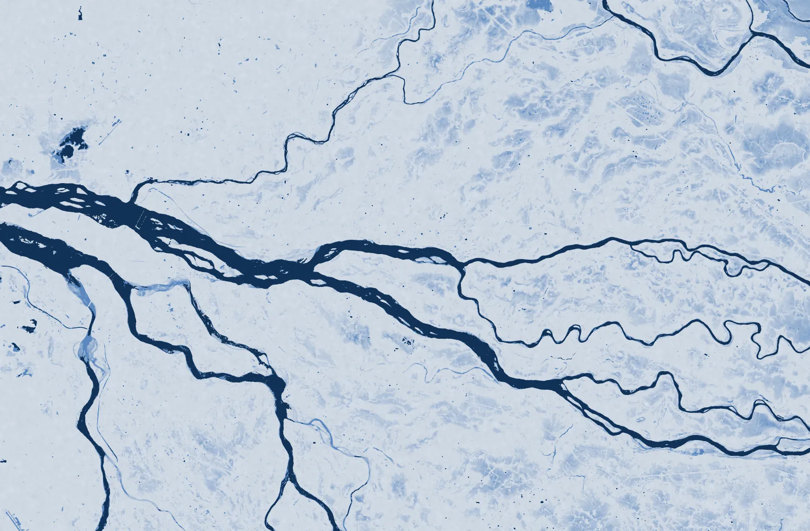
    <div class="mosaic" aria-hidden="true"><i style="opacity:0.85"></i><i style="opacity:0.85"></i><i style="opacity:0.6"></i><i style="opacity:0"></i><i style="opacity:0"></i><i style="opacity:0"></i><i style="opacity:0"></i><i style="opacity:0"></i><i style="opacity:1"></i><i style="opacity:0.85"></i><i style="opacity:0.3"></i><i style="opacity:0.3"></i><i style="opacity:0.3"></i><i style="opacity:0"></i><i style="opacity:0"></i><i style="opacity:0"></i><i style="opacity:1"></i><i style="opacity:0.85"></i><i style="opacity:0.85"></i><i style="opacity:0.3"></i><i style="opacity:0.3"></i><i style="opacity:0"></i><i style="opacity:0"></i><i style="opacity:0"></i><i style="opacity:0.85"></i><i style="opacity:0.85"></i><i style="opacity:0.3"></i><i style="opacity:0.6"></i><i style="opacity:0.3"></i><i style="opacity:0"></i><i style="opacity:0"></i><i style="opacity:0"></i><i style="opacity:0.6"></i><i style="opacity:1"></i><i style="opacity:0.6"></i><i style="opacity:0"></i><i style="opacity:0.3"></i><i style="opacity:0"></i><i style="opacity:0"></i><i style="opacity:0"></i></div>
    <span class="art-chip">How often the delta flooded · 590 radar passes</span>
  </div>
  <div class="container hero-inner">
    <div class="hero-text">
      <span class="badge rise"><span class="mark" aria-hidden="true"></span>IIT Bombay · Civil Engineering IDP 2026</span>
      <h1 class="rise d1">What floods when the Mahanadi rises.</h1>
      <p class="lede rise d2">A river forecast says how much water reaches Naraj. We turn that number into the fields, villages, roads, bridges and river banks that go under, from every radar image of the delta since 2017 and the engineering of seven civil-engineering specializations.</p>
      <div class="cta-row rise d3"><a class="btn btn-primary" href="viewer.html">Open the flood map <span class="arrow" aria-hidden="true">→</span></a><a class="btn btn-outline" href="#how">How it works</a></div>
    </div>
  </div>
</section>

<div class="spec-band"><div class="container"><div class="specs"><div><b>590</b><span class="lab">Radar passes mapped</span><span class="sub">Every Sentinel-1 pass over the delta, 2017–2026, through monsoon cloud</span></div><div><b>20 m</b><span class="lab">Flood-map resolution</span><span class="sub">Radar TerraMind + U-Net fusion, about 5 s per pass on one GPU</span></div><div><b>30,427</b><span class="lab">People on 25-year flood land</span><span class="sub">and 52,423 who lose road access to every hospital</span></div><div><b>0.20 vs 0.04</b><span class="lab">Skill on years not seen</span><span class="sub">Trigger map against flood climatology at high flows, pixel IoU</span></div></div></div></div>

<div class="sources" aria-label="Data sources" style="border-top:0"><div class="container sources-inner">
  <span class="sources-label">Built on open data</span>
  <div class="marquee"><div class="track"><div class="set"><span>Sentinel-1 radar</span><span>Sentinel-2 optical</span><span>Sen1Floods11</span><span>GloFAS v4 discharge</span><span>ERA5 rain</span><span>JRC Surface Water</span><span>GHSL population</span><span>ESA WorldCover</span><span>Copernicus DEM</span><span>SoilGrids</span><span>IBTrACS storm tracks</span><span>OpenStreetMap</span></div><div class="set" aria-hidden="true"><span>Sentinel-1 radar</span><span>Sentinel-2 optical</span><span>Sen1Floods11</span><span>GloFAS v4 discharge</span><span>ERA5 rain</span><span>JRC Surface Water</span><span>GHSL population</span><span>ESA WorldCover</span><span>Copernicus DEM</span><span>SoilGrids</span><span>IBTrACS storm tracks</span><span>OpenStreetMap</span></div></div></div>
</div></div>

<section id="live" class="band-surface"><div class="container">
  <div class="center-head">
    <span class="eyebrow blue">Live outlook · issued 31 Oct 2026, 01:58 IST</span>
    <h2>What the river will do this week, and whom it reaches</h2>
    <p class="lede">The live feed reads today's GloFAS forecast (51 runs, 30 days), ECMWF rain and the official alerts, and turns the flow into an impact-based warning: the level comes from the people on flooded land and the villages that lose their hospital, not from the river level alone.</p>
  </div>
  <div class="live-grid"><article class="live-card wide">
      <header><div><h3>Mahanadi delta</h3><span class="live-sub">Mahanadi at Naraj · next 10 days</span></div>
        <span class="lvl" style="--lv:#16a34a">No flood impact</span></header>
      <div class="live-kv"><div><b>2,923</b><span>m³/s today</span></div><div><b>3,810</b><span>peak, 01 Nov (median run)</span></div>
        <div><b>3,836</b><span>wettest 10 % of runs</span></div><div><b>1,886</b><span>people on flooded land at the peak</span></div></div>
      <svg class="hydro" viewBox="0 0 660 200" role="img" aria-label="Naraj flow outlook, next 29 days"><line x1="52" x2="636" y1="172.0" y2="172.0" class="g"/><text x="46" y="176.0" class="yl">0k</text><line x1="52" x2="636" y1="116.3" y2="116.3" class="g"/><text x="46" y="120.3" class="yl">5k</text><line x1="52" x2="636" y1="60.7" y2="60.7" class="g"/><text x="46" y="64.7" class="yl">10k</text><polygon points="52.0,139.2 72.9,129.3 93.7,129.3 114.6,129.3 135.4,133.8 156.3,139.5 177.1,141.1 198.0,142.7 218.9,140.8 239.7,140.8 260.6,142.5 281.4,145.6 302.3,149.2 323.1,151.9 344.0,153.8 364.9,155.4 385.7,156.4 406.6,156.7 427.4,157.1 448.3,157.6 469.1,157.4 490.0,157.3 510.9,157.3 531.7,157.4 552.6,157.8 573.4,158.3 594.3,158.5 615.1,158.6 636.0,158.7 636.0,159.8 615.1,159.8 594.3,159.7 573.4,159.7 552.6,159.6 531.7,159.4 510.9,159.3 490.0,159.2 469.1,159.1 448.3,158.9 427.4,158.7 406.6,158.5 385.7,158.3 364.9,158.1 344.0,157.9 323.1,157.5 302.3,156.8 281.4,155.4 260.6,153.4 239.7,150.7 218.9,147.9 198.0,144.7 177.1,142.5 156.3,140.8 135.4,134.7 114.6,129.7 93.7,129.7 72.9,129.7 52.0,139.5" class="band"/><polyline points="52.0,139.5 72.9,129.6 93.7,129.6 114.6,129.6 135.4,134.4 156.3,140.4 177.1,141.8 198.0,144.0 218.9,146.8 239.7,149.3 260.6,151.3 281.4,153.1 302.3,154.8 323.1,156.2 344.0,157.0 364.9,157.5 385.7,157.9 406.6,158.2 427.4,158.4 448.3,158.6 469.1,158.7 490.0,158.9 510.9,159.1 531.7,159.2 552.6,159.3 573.4,159.4 594.3,159.6 615.1,159.6 636.0,159.6" class="med"/><line x1="52" x2="636" y1="35.6" y2="35.6" stroke="#eab308" stroke-width="1.5" stroke-dasharray="5 4"/><text x="636" y="30.6" class="lvl-t" text-anchor="end">Be aware · 12,250 m³/s</text><text x="52.0" y="192" class="xl" text-anchor="middle">31 Oct</text><text x="198.0" y="192" class="xl" text-anchor="middle">07 Nov</text><text x="344.0" y="192" class="xl" text-anchor="middle">14 Nov</text><text x="490.0" y="192" class="xl" text-anchor="middle">21 Nov</text><text x="636.0" y="192" class="xl" text-anchor="end">28 Nov</text></svg>
      <p class="live-note">No village is expected to have 10 % of its people on flooded land. Upstream-gauge model, daily flow: 31 Oct 2,526, 01 Nov 3,078, 02 Nov 2,762 m³/s.</p>
      <h4>Official alerts in the state feed</h4><ul class="alerts"><li>Moderate Rain, Thundershower with wind speed 30-40kmph is very likely to occur at many places over Anugul, Baleshwar, Bhadrak, Cuttack, Dhenkanal, Gaj… <span>Odisha-SDMA</span></li><li>Moderate Rain with squally wind 30-40 kmph  is very likely to occur at isolated places over Baleshwar, Bhadrak, Cuttack(Including Cuttack City), Dhenk… <span>Odisha-SDMA</span></li><li>Moderate Rain with squally wind 30-40 gusting to 50 kmph  is very likely to occur at isolated places over  Bhadrak, Jajapur in next 3 hours. <span>Odisha-SDMA</span></li></ul>
    </article><article class="live-card">
      <header><div><h3>Brahmani–Baitarani delta</h3><span class="live-sub">Brahmani at Jenapur · next 10 days</span></div>
        <span class="lvl" style="--lv:#16a34a">No flood impact</span></header>
      <div class="live-kv"><div><b>442</b><span>m³/s today</span></div><div><b>648</b><span>peak, 03 Nov (median run)</span></div>
        <div><b>699</b><span>wettest 10 % of runs</span></div><div><b>1,620</b><span>people on flooded land at the peak</span></div></div>
      <svg class="hydro" viewBox="0 0 660 200" role="img" aria-label="Jenapur flow outlook, next 29 days"><line x1="52" x2="636" y1="172.0" y2="172.0" class="g"/><text x="46" y="176.0" class="yl">0k</text><line x1="52" x2="636" y1="133.0" y2="133.0" class="g"/><text x="46" y="137.0" class="yl">1k</text><line x1="52" x2="636" y1="94.1" y2="94.1" class="g"/><text x="46" y="98.1" class="yl">2k</text><line x1="52" x2="636" y1="55.1" y2="55.1" class="g"/><text x="46" y="59.1" class="yl">3k</text><polygon points="52.0,154.7 72.9,153.4 93.7,149.4 114.6,144.8 135.4,145.3 156.3,148.1 177.1,150.6 198.0,152.4 218.9,153.7 239.7,155.0 260.6,156.3 281.4,157.4 302.3,158.5 323.1,159.5 344.0,160.4 364.9,160.7 385.7,161.5 406.6,162.1 427.4,162.7 448.3,163.2 469.1,163.5 490.0,163.4 510.9,163.2 531.7,163.7 552.6,164.1 573.4,164.5 594.3,164.6 615.1,164.7 636.0,164.9 636.0,165.6 615.1,165.5 594.3,165.5 573.4,165.4 552.6,165.3 531.7,165.2 510.9,165.1 490.0,165.0 469.1,164.8 448.3,164.6 427.4,164.4 406.6,164.1 385.7,163.8 364.9,163.4 344.0,162.9 323.1,162.3 302.3,161.6 281.4,160.8 260.6,160.0 239.7,158.9 218.9,157.3 198.0,155.5 177.1,153.2 156.3,150.5 135.4,147.8 114.6,147.5 93.7,151.3 72.9,154.4 52.0,154.8" class="band"/><polyline points="52.0,154.8 72.9,154.2 93.7,150.7 114.6,146.8 135.4,147.0 156.3,149.4 177.1,152.0 198.0,154.0 218.9,155.7 239.7,157.4 260.6,158.8 281.4,159.8 302.3,160.8 323.1,161.6 344.0,162.2 364.9,162.8 385.7,163.3 406.6,163.7 427.4,164.1 448.3,164.3 469.1,164.6 490.0,164.8 510.9,164.9 531.7,165.1 552.6,165.2 573.4,165.3 594.3,165.4 615.1,165.4 636.0,165.4" class="med"/><line x1="52" x2="636" y1="35.6" y2="35.6" stroke="#eab308" stroke-width="1.5" stroke-dasharray="5 4"/><line x1="52" x2="636" y1="35.6" y2="35.6" stroke="#f08714" stroke-width="1.5" stroke-dasharray="5 4"/><text x="636" y="30.6" class="lvl-t" text-anchor="end">Be aware, Be prepared · 3,500 m³/s</text><text x="52.0" y="192" class="xl" text-anchor="middle">31 Oct</text><text x="198.0" y="192" class="xl" text-anchor="middle">07 Nov</text><text x="344.0" y="192" class="xl" text-anchor="middle">14 Nov</text><text x="490.0" y="192" class="xl" text-anchor="middle">21 Nov</text><text x="636.0" y="192" class="xl" text-anchor="end">28 Nov</text></svg>
      <p class="live-note">No village is expected to have 10 % of its people on flooded land.</p>
      <h4>Official alerts in the state feed</h4><ul class="alerts"><li>River Jalaka at Mathani Road Bridge in Balasore district of Odisha continues to flow in severe flood situation at 6:00 pm today. <span>CWC</span></li><li>Moderate Rain, Thundershower with wind speed 30-40kmph is very likely to occur at many places over Anugul, Baleshwar, Bhadrak, Cuttack, Dhenkanal, Gaj… <span>Odisha-SDMA</span></li><li>Moderate Rain with squally wind 30-40 kmph  is very likely to occur at isolated places over Baleshwar, Bhadrak, Cuttack(Including Cuttack City), Dhenk… <span>Odisha-SDMA</span></li></ul>
    </article><article class="live-card">
      <header><div><h3>Brahmaputra at Majuli</h3><span class="live-sub">Brahmaputra at Neamatighat · next 10 days</span></div>
        <span class="lvl" style="--lv:#16a34a">No flood impact</span></header>
      <div class="live-kv"><div><b>2,971</b><span>m³/s today</span></div><div><b>2,971</b><span>peak, 31 Oct (median run)</span></div>
        <div><b>2,971</b><span>wettest 10 % of runs</span></div><div><b>83</b><span>people on flooded land at the peak</span></div></div>
      <svg class="hydro" viewBox="0 0 660 200" role="img" aria-label="Neamatighat flow outlook, next 29 days"><line x1="52" x2="636" y1="172.0" y2="172.0" class="g"/><text x="46" y="176.0" class="yl">0k</text><line x1="52" x2="636" y1="140.3" y2="140.3" class="g"/><text x="46" y="144.3" class="yl">5k</text><line x1="52" x2="636" y1="108.6" y2="108.6" class="g"/><text x="46" y="112.6" class="yl">10k</text><line x1="52" x2="636" y1="76.9" y2="76.9" class="g"/><text x="46" y="80.9" class="yl">15k</text><line x1="52" x2="636" y1="45.2" y2="45.2" class="g"/><text x="46" y="49.2" class="yl">20k</text><polygon points="52.0,153.2 72.9,153.8 93.7,154.3 114.6,154.8 135.4,154.2 156.3,153.2 177.1,153.2 198.0,153.2 218.9,153.5 239.7,154.1 260.6,154.8 281.4,155.2 302.3,155.6 323.1,156.0 344.0,156.4 364.9,156.4 385.7,156.8 406.6,157.2 427.4,157.4 448.3,157.6 469.1,157.9 490.0,158.2 510.9,158.5 531.7,158.6 552.6,158.9 573.4,159.1 594.3,159.3 615.1,159.6 636.0,159.8 636.0,160.7 615.1,160.6 594.3,160.4 573.4,160.2 552.6,160.1 531.7,159.9 510.9,159.7 490.0,159.5 469.1,159.3 448.3,159.0 427.4,158.8 406.6,158.5 385.7,158.2 364.9,157.9 344.0,157.5 323.1,157.1 302.3,156.8 281.4,156.4 260.6,156.1 239.7,155.8 218.9,155.4 198.0,155.2 177.1,155.2 156.3,155.2 135.4,155.2 114.6,154.9 93.7,154.3 72.9,153.8 52.0,153.2" class="band"/><polyline points="52.0,153.2 72.9,153.8 93.7,154.3 114.6,154.9 135.4,155.0 156.3,154.7 177.1,154.7 198.0,154.7 218.9,155.0 239.7,155.4 260.6,155.8 281.4,156.0 302.3,156.4 323.1,156.8 344.0,157.2 364.9,157.5 385.7,157.9 406.6,158.1 427.4,158.4 448.3,158.7 469.1,158.9 490.0,159.2 510.9,159.4 531.7,159.6 552.6,159.8 573.4,159.9 594.3,160.1 615.1,160.2 636.0,160.4" class="med"/><line x1="52" x2="636" y1="35.6" y2="35.6" stroke="#eab308" stroke-width="1.5" stroke-dasharray="5 4"/><line x1="52" x2="636" y1="27.7" y2="27.7" stroke="#f08714" stroke-width="1.5" stroke-dasharray="5 4"/><text x="636" y="22.7" class="lvl-t" text-anchor="end">Be aware 21,500 · Be prepared 22,750 m³/s</text><text x="52.0" y="192" class="xl" text-anchor="middle">31 Oct</text><text x="198.0" y="192" class="xl" text-anchor="middle">07 Nov</text><text x="344.0" y="192" class="xl" text-anchor="middle">14 Nov</text><text x="490.0" y="192" class="xl" text-anchor="middle">21 Nov</text><text x="636.0" y="192" class="xl" text-anchor="end">28 Nov</text></svg>
      <p class="live-note">No village is expected to have 10 % of its people on flooded land.</p>
      <h4>Official alerts in the state feed</h4><ul class="alerts"><li>IMD Guwahati has issued forecast for  Thunderstorms and Lightning and light to moderate rain which is very likely to occur at a few places over Jorhat… <span>Assam-SDMA</span></li><li>IMD Guwahati has issued forecast for Thunderstorm with Lightning and light to moderate rain which is very likely to occur at a few places over Charaid… <span>Assam-SDMA</span></li><li>IMD Guwahati has issued forecast for Thunderstorm and Lightning with gusty wind along with light to moderate rain which is very likely to occur at iso… <span>Assam-SDMA</span></li></ul>
    </article></div>
  <div class="replay">
    <div>
      <span class="eyebrow">Replay · the largest flood of the radar era</span>
      <h3>What the feed would have said on 14 August 2022</h3>
      <p>Run on the morning of 14 August with the flows that came, the feed would have issued <b>Act now</b> for a Naraj peak of 28,378 m³/s on 18 August: 31 villages named with the day the water reaches them and 41 that lose their hospital, from 16 August. The upstream-gauge model, trained without 2022, forecast 16,254 m³/s for 15 Aug, 20,554 m³/s for 16 Aug, 21,327 m³/s for 17 Aug: lower than the flood that came, but already 'Act now' three days ahead.</p>
      <p>The radar shows why rain matters: more land was under water on 16 August, after 177 mm of rain in a week, than at the river crest two days later.</p>
    </div>
    <div><figure class="case"><div class="pic">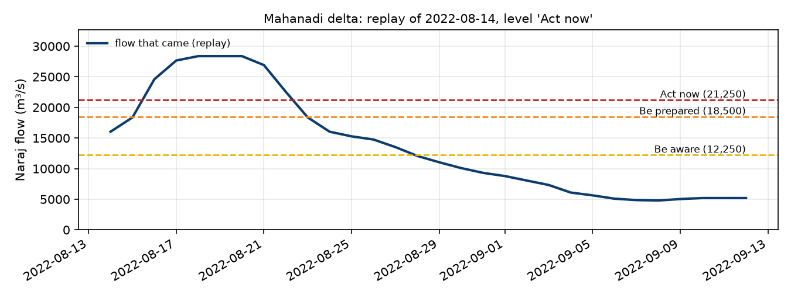</div><figcaption>Replay of 14 Aug 2022: the flow that came and the warning levels</figcaption></figure>
      <div class="tablewrap"><table><thead><tr><th>Radar pass</th><th class=num>Flow (m³/s)</th><th class=num>Imaged</th><th class=num>Expected (km²)</th><th class=num>Radar (km²)</th></tr></thead><tbody><tr><td>16 Aug</td><td class=num>24,603</td><td class=num>71%</td><td class=num>218</td><td class=num>280</td></tr><tr><td>18 Aug</td><td class=num>28,378</td><td class=num>100%</td><td class=num>240</td><td class=num>125</td></tr><tr><td>21 Aug</td><td class=num>26,914</td><td class=num>90%</td><td class=num>228</td><td class=num>67</td></tr></tbody></table></div></div>
  </div>
  <p class="sim-note" style="text-align:center;margin-top:18px">A snapshot of the feed (31 Oct 01:58 IST); CWC reports 11 stations above warning level across India; latest radar pass over the delta 30 Oct. <code>python live/run_live.py</code> refreshes it in about 15 seconds and writes a CAP alert and an Atom feed. A student prototype, not an official warning.</p>
</div></section>

<section id="problem" class="band-surface"><div class="container">
  <div class="center-head">
    <span class="badge"><span class="mark" aria-hidden="true"></span>The problem in the field</span>
    <h2>Warning systems see the river at a point. Nobody sees what that flow floods.</h2>
    <p class="lede">ClimMaTech, our industry partner, forecasts river level and flow 30 minutes to 48 hours ahead and warns villages through sirens and an app. Each of those numbers belongs to one gauge. Their own architecture lists a map-based River View layer for flood risk; this project builds what such a layer needs for one delta.</p>
  </div>
  <div class="mini-cards">
    <article class="mini"><div class="dash" aria-hidden="true"><i></i><i></i><i></i></div><h3>What exists</h3><p>Radar gauges on bridges and spillways, solar sirens, a control room and the Aagah app, all working from the water level at a point.</p></article>
    <article class="mini"><div class="dash" aria-hidden="true"><i></i><i></i><i></i></div><h3>What is missing</h3><p>Which fields, villages, roads, bridges and embankments go under at the forecast flow, and who must be warned first.</p></article>
    <article class="mini"><div class="dash" aria-hidden="true"><i></i><i></i><i></i></div><h3>Where</h3><p>The Mahanadi delta below Naraj: 3,038 km² of study box, 4.1 million people, a damaging flood every few years.</p></article>
    <article class="mini"><div class="dash" aria-hidden="true"><i></i><i></i><i></i></div><h3>Who uses it</h3><p>The partner's control room, the Odisha Water Resources Department and CWC, and the district administrations that order evacuations.</p></article>
  </div>
  <div class="statement">
    <span class="eyebrow">Refined problem statement</span>
    <p>For the Mahanadi delta, turn a river-flow forecast at Naraj into a map of what floods and whom it affects, with a satellite model chosen by a fair benchmark, and use that map to plan where warnings and sensors go, checked and calibrated at the site.</p>
  </div>
</div></section>

<section id="atlas" class="band-stripes"><div class="container">
  <div class="split">
    <div>
      <span class="eyebrow">Remote sensing · water resources</span>
      <h2 class="big-h2" style="margin-top:16px">A flood atlas of the delta, linked to the flow at Naraj.</h2>
      <h3 class="lead-h3">Every Sentinel-1 pass since 2017, mapped through monsoon cloud and matched with the river.</h3>
      <div class="prose" style="margin-top:18px">
        <p>The radar model mapped all 590 passes over the delta. Water outside the river bed and the dry-season water is flood: 1,137 km² went under at least once. Matching each pass with the GloFAS discharge at Naraj gives every 20 m pixel the flow at which it starts to flood, so a forecast flow becomes a map.</p>
        <p>Pick a flood on the right to see the land it reaches. From the 10-year flood upwards the map is a lower bound: the radar record has not yet seen a larger river.</p>
      </div>
      <div class="kv">
        <div><span>Rank correlation of flooded share with the Naraj flow</span><b>0.76</b></div>
        <div><span>Held-out years, high flows: trigger map against flood climatology (IoU)</span><b>0.20 vs 0.04</b></div>
        <div><span>Villages flooded on a held-out high-flow pass that the map flagged</span><b>21%</b></div>
        <div><span>Agreement with Sentinel-2 water within a day (IoU, clear pixels)</span><b>0.56</b></div>
      </div>
    </div>
    <div class="sim" aria-label="Scenario explorer">
      <div class="sim-top"><h3>What floods at Naraj flow…</h3><span class="chip">From 590 radar passes</span></div>
      <div class="seg" role="group" aria-label="Flood scenario"><button type="button" data-scen="T2" aria-pressed="false">2-year</button><button type="button" data-scen="T5" aria-pressed="false">5-year</button><button type="button" data-scen="T10" aria-pressed="false">10-year</button><button type="button" data-scen="T25" aria-pressed="true">25-year</button><button type="button" data-scen="T100" aria-pressed="false">100-year</button><button type="button" data-scen="observed_20180908" aria-pressed="false">Largest seen</button></div>
      <div class="sim-map">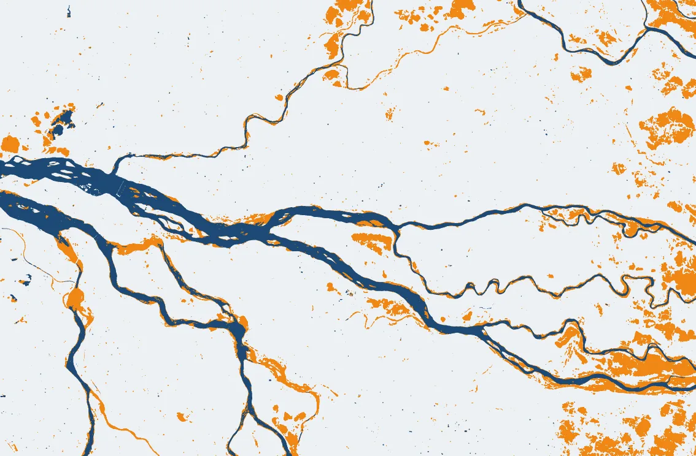<span class="town" style="left:13.0%;top:46.6%">Cuttack</span><span class="town" style="left:47.8%;top:42.6%">Salepur</span><span class="town r" style="left:95.3%;top:38.0%">Kendrapara</span><span class="scale">10 km</span></div>
      <div class="legend"><span><i class="sw fl"></i>Flooded land</span><span><i class="sw rv"></i>River bed and normal water</span><span><i class="sw ld"></i>Dry land</span></div>
      <div class="sim-stats">
        <div><b id="sim-q">32,997 m³/s</b><span id="sim-lakh">11.7 lakh cusec</span></div>
        <div><b id="sim-km2">240 km²</b><span>flooded land</span></div>
        <div><b id="sim-people">30,427</b><span>people living on it</span></div>
        <div><b id="sim-sett">32</b><span>settlements with 10 % or more flooded</span></div>
        <div><b id="sim-road">39.3 km</b><span>road under water</span></div>
        <div><b id="sim-cut">52,423</b><span>people cut off from any hospital</span></div>
      </div>
      <p class="sim-note" id="sim-note">Flow above the largest in the radar record (28,378 m³/s): the map cannot grow further, so this is a lower bound.</p>
    </div>
  </div>
  <div class="figs"><figure class="case wide"><div class="pic">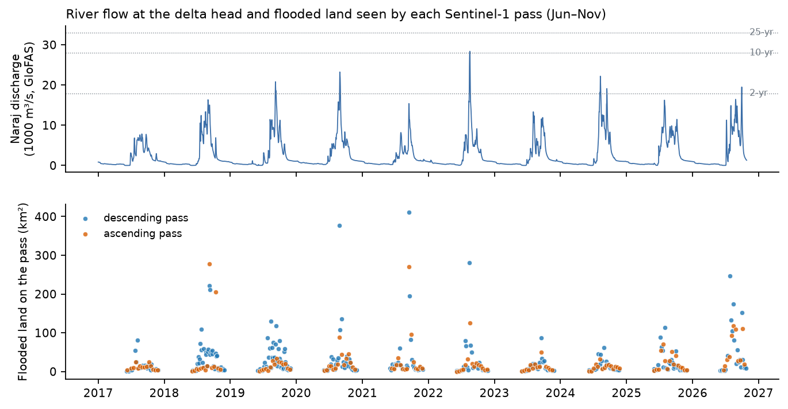</div><figcaption>River flow at Naraj and flooded land on every radar pass</figcaption></figure><figure class="case"><div class="pic">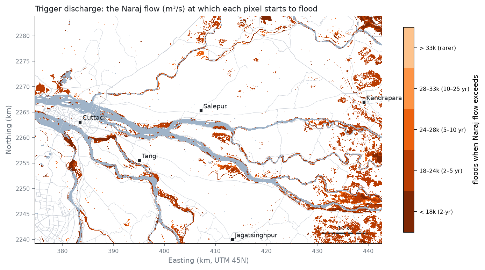</div><figcaption>The Naraj flow at which each pixel starts to flood</figcaption></figure><figure class="case"><div class="pic">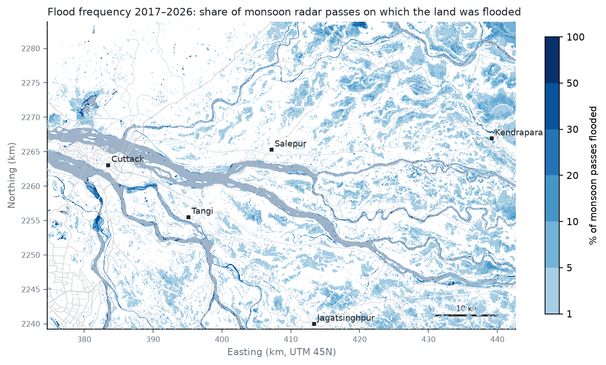</div><figcaption>How often the land flooded, 2017–2026</figcaption></figure></div>
  <div class="sub-h"><span class="eyebrow">The river is not the only driver</span><h3>The same river flow floods three times as much land in a week of heavy rain.</h3>
    <p>The largest floods in the record (September 2021 and August 2020) came with heavy rain, not with the highest river flows. Looking up past passes with a similar flow and similar 7-day rain shows the effect for the 5-year flow:</p></div>
  <div class="pair">
      <figure class="case"><div class="pic map">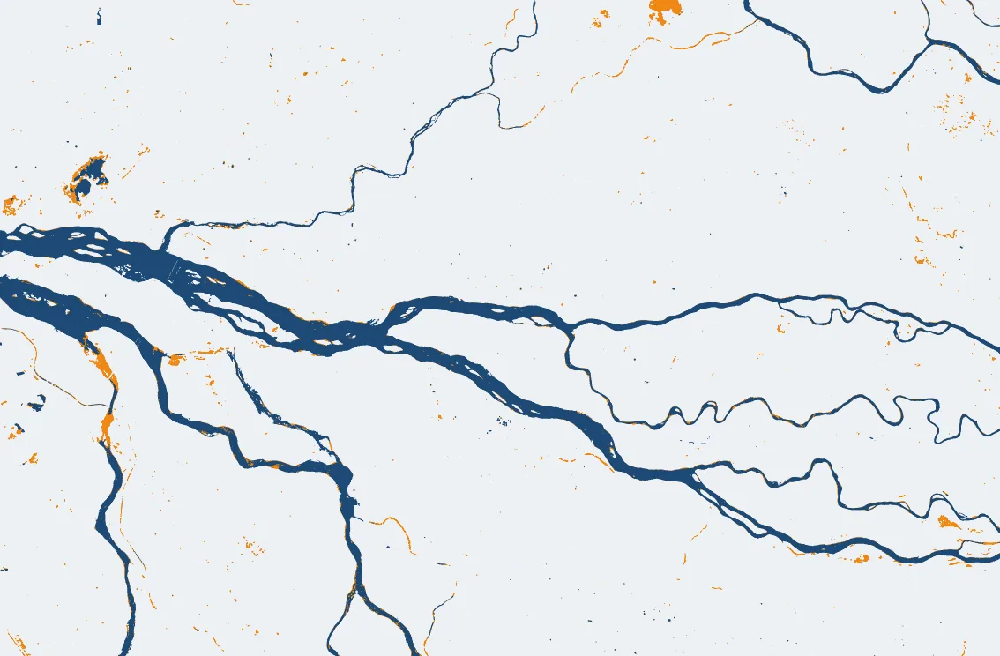</div>
        <figcaption><b>23,940 m³/s, dry week (20 mm)</b> 27 km² flooded, 5,232 people on it</figcaption></figure>
      <figure class="case"><div class="pic map">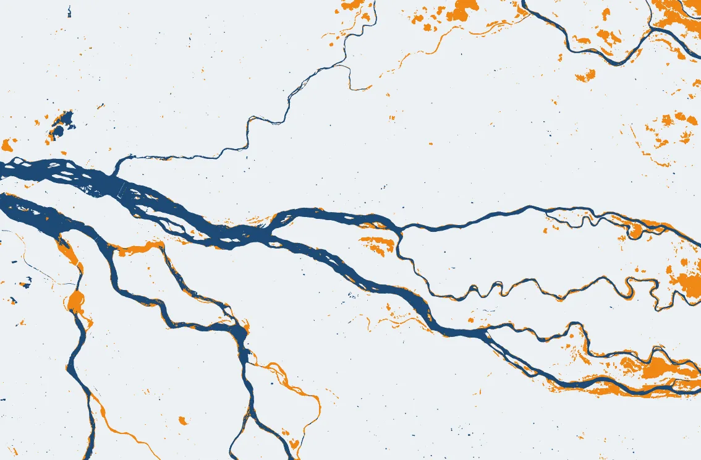</div>
        <figcaption><b>23,940 m³/s, heavy-rain week (171 mm)</b> 93 km² flooded, 13,540 people on it</figcaption></figure>
    </div>
  <p class="note">The learned flow + rain model gives a similar picture: at the 5-year flow it floods 30 km² in a dry week, 44 km² with typical rain and 142 km² with heavy rain.</p>
  <p class="note">Floodplain flooding is patchy and the observed maps are themselves radar maps, so pass-level scores are modest. Where the delta floods is very predictable from its past floods (ranking skill 0.90); how much of it floods on a given day only partly (0.72 for the trigger map). The frequency map says where to prepare, the trigger map at which flow to act, and the rain forecast has to be read with the river forecast.</p>
</div></section>

<section id="basins" style="border-top:1px solid var(--line)"><div class="container">
  <div class="center-head">
    <span class="eyebrow blue">Other basins</span>
    <h2>The same pipeline on two more basins</h2>
    <p class="lede">Nothing in the method is specific to the Mahanadi: a box, a gauge and the months of the flood season set up a new basin. The Brahmani–Baitarani delta next door and the Brahmaputra around Majuli in Assam were mapped from every Sentinel-1 pass since 2017 with the same radar models and joined the live feed.</p>
  </div>
  <div class="basin-grid"><article class="basin-card"><div class="pic">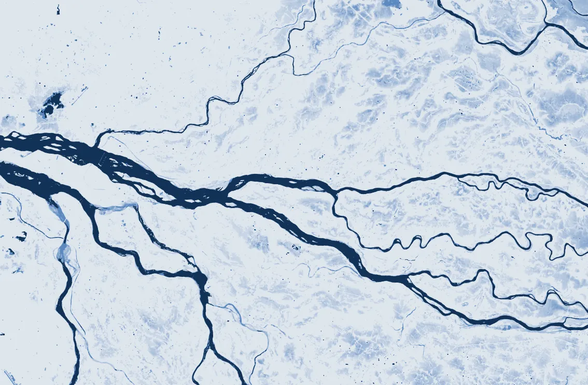</div><div class="basin-body">
      <span class="eyebrow">Odisha · Mahanadi at Naraj</span><h3>Mahanadi delta</h3>
      <dl><div><dt>Radar passes mapped</dt><dd>590</dd></div><div><dt>Land flooded at least once</dt><dd>1,137 km²</dd></div>
      <div><dt>25-year flow, flooded land</dt><dd>32,997 m³/s, at least 240 km²</dd></div>
      <div><dt>People on it</dt><dd>at least 30,427</dd></div>
      <div><dt>Held-out years, high flows (IoU)</dt><dd>0.20 vs 0.04</dd></div>
      <div><dt>Agreement with Sentinel-2</dt><dd>IoU 0.56</dd></div></dl></div></article><article class="basin-card"><div class="pic">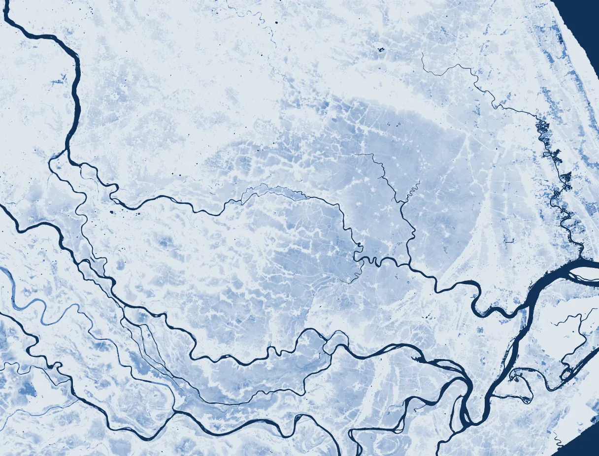</div><div class="basin-body">
      <span class="eyebrow">Odisha · Brahmani at Jenapur</span><h3>Brahmani–Baitarani delta</h3>
      <dl><div><dt>Radar passes mapped</dt><dd>394</dd></div><div><dt>Land flooded at least once</dt><dd>2,277 km²</dd></div>
      <div><dt>25-year flow, flooded land</dt><dd>6,959 m³/s, at least 950 km²</dd></div>
      <div><dt>People on it</dt><dd>at least 129,662</dd></div>
      <div><dt>Held-out years, high flows (IoU)</dt><dd>0.17 vs 0.01</dd></div>
      <div><dt>Agreement with Sentinel-2</dt><dd>IoU 0.65</dd></div></dl></div></article><article class="basin-card"><div class="pic">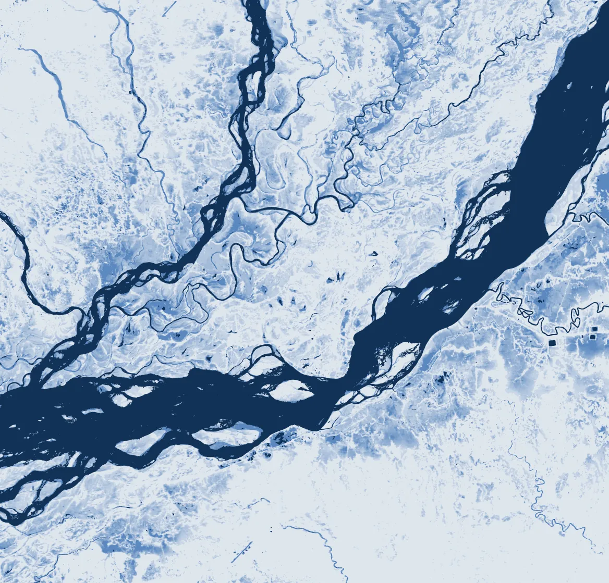</div><div class="basin-body">
      <span class="eyebrow">Assam · Brahmaputra at Neamatighat</span><h3>Brahmaputra at Majuli</h3>
      <dl><div><dt>Radar passes mapped</dt><dd>346</dd></div><div><dt>Land flooded at least once</dt><dd>2,145 km²</dd></div>
      <div><dt>25-year flow, flooded land</dt><dd>42,202 m³/s, at least 1,120 km²</dd></div>
      <div><dt>People on it</dt><dd>at least 77,655</dd></div>
      <div><dt>Held-out years, high flows (IoU)</dt><dd>0.31 vs 0.05</dd></div>
      <div><dt>Agreement with Sentinel-2</dt><dd>IoU 0.67</dd></div></dl></div></article></div>
</div></section>

<section id="how" class="band-diamond"><div class="container">
  <div class="center-head">
    <span class="eyebrow">How it works</span>
    <h2>From a radar pass to a warning</h2>
    <p class="lede">Six steps in order, each tested on data it had not seen. Hover or tap a tile to bring it forward.</p>
  </div>
  <div class="chess">
    <article class="tile" tabindex="0"><span class="no">01</span><h3>Choose the model</h3><p>Six geospatial foundation models against a CNN and a U-Net, 92 training runs, scored on an Indian flood none of them saw.</p><span class="key">U-Net 0.770 · best foundation model 0.747</span></article>
    <article class="tile ink" tabindex="0"><span class="no">02</span><h3>Map every pass</h3><p>A radar-only TerraMind + U-Net fusion maps every Sentinel-1 pass over the delta, monsoon and dry season.</p><span class="key">590 passes · 1,137 km² flooded at least once</span></article>
    <article class="tile ink" tabindex="0"><span class="no">03</span><h3>Link to river flow</h3><p>Each 20 m pixel gets the Naraj flow at which it starts to flood, fitted without the year it predicts.</p><span class="key">IoU 0.20 vs 0.04 at high flows</span></article>
    <article class="tile" tabindex="0"><span class="no">04</span><h3>Count the impact</h3><p>People, roads, hospitals, bridges, river banks and foundations for every design flood.</p><span class="key">52,423 people cut off in a 25-year flood</span></article>
    <article class="tile" tabindex="0"><span class="no">05</span><h3>Plan the response</h3><p>Sirens where exposed people live, a sensor on each distributary, raised links, the months to build in.</p><span class="key">40 sirens · 6 river sensors · December–April</span></article>
    <article class="tile ink" tabindex="0"><span class="no">06</span><h3>Check at the site</h3><p>Random field points, discharge, soils, wells and bridges measure what the models assume, and change the numbers.</p><span class="key">40 ground-truth points · 8 field protocols</span></article>
  </div>
  <p class="center-link"><a class="more" href="#specializations">See the seven analyses <span class="arrow" aria-hidden="true">→</span></a></p>
</div></section>

<section id="model"><div class="container">
  <div class="center-head" style="text-align:left;justify-items:start;margin:0">
    <span class="eyebrow">Remote sensing · model selection</span>
    <h2>On a flood it had never seen, a U-Net beat every foundation model.</h2>
    <p class="lede">92 training runs on Sen1Floods11 with one recipe: six geospatial foundation models (Prithvi-EO-2.0, TerraMind, DOFA, Clay, Satlas, DeCUR), frozen and fine-tuned, against a CNN and a U-Net, three seeds each. The test that matters is the leave-India-out split: a 2016 Assam flood that no model saw in training.</p>
  </div>
  <div class="facts">
    <div class="fact"><b>0.770</b><span>U-Net water IoU on the unseen Assam flood</span></div>
    <div class="fact"><b>0.747</b><span>best foundation model (Prithvi-EO-2.0)</span></div>
    <div class="fact"><b>0.776</b><span>fusion of U-Net, CNN and the best foundation model</span></div>
    <div class="fact"><b>0.681</b><span>radar-only TerraMind + U-Net on 20 m radar, trained at 20 m, the model that maps the monsoon</span></div>
  </div>
  <div class="audit">
    <div><b>92 of 92 runs re-checked, 0 problems</b><p>Each run used the arguments it was queued with; no chip sits in two splits; under leave-India-out no India chip reaches training or validation; every test score recomputed from the saved predictions matches.</p></div>
    <div><b>Matches the published TerraMind numbers</b><p>Our TerraMind-B on the official Sen1Floods11 test: mean IoU 89.7 with radar and optical, 79.8 with radar alone; the TerraMind paper (arXiv:2504.11171) reports 90.62 and 80.39.</p></div>
    <div><b>The delta's radar looks like the training radar</b><p>Median backscatter of dry land: -8.7 dB in the delta, -9.7 dB in Sen1Floods11 (VV); water sits 8–11 dB lower in both, so the archive conversion holds.</p></div>
  </div>
  <div class="figs"><figure class="case"><div class="pic">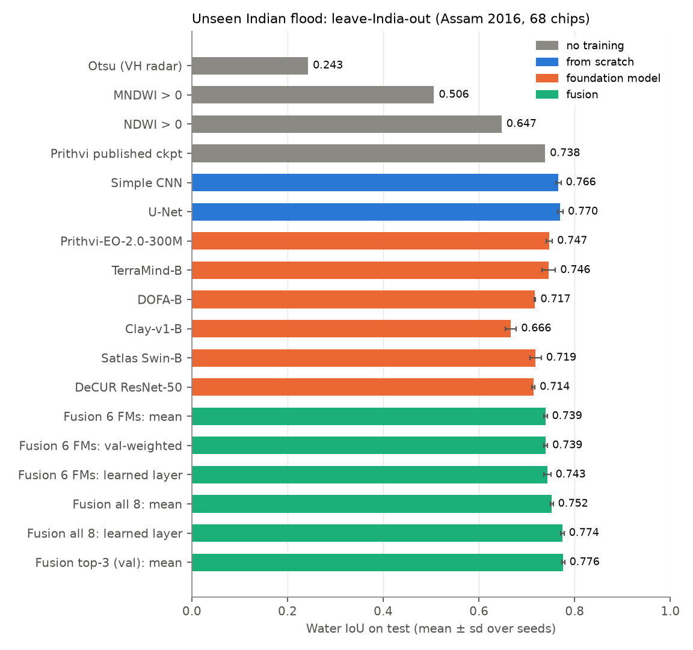</div><figcaption>Test IoU on the unseen Indian flood, mean ± sd over three seeds</figcaption></figure><figure class="case"><div class="pic">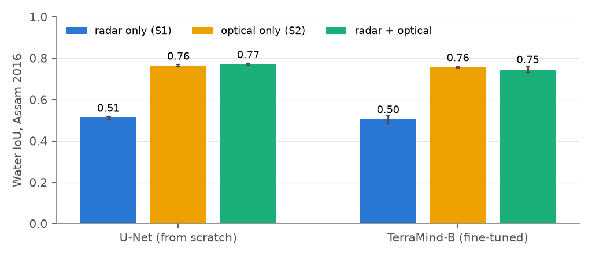</div><figcaption>Radar only, optical only and both: optical wins under clear sky, radar is all that sees a monsoon flood</figcaption></figure></div>
</div></section>

<section id="specializations" class="band-surface" style="border-top:1px solid var(--line)"><div class="container">
  <div class="center-head" style="text-align:left;justify-items:start;margin:0;max-width:780px">
    <span class="eyebrow">Seven specializations, one flood</span>
    <h2>Every civil-engineering discipline gets its own question.</h2>
    <p class="lede">The same flood scenarios feed seven analyses, one per specialization of the department. Each owner also has a measurement to make at the site that can change the answer.</p>
  </div>
  <div class="acc-wrap">
    <div class="acc-visual"><div class="visual-card"><span class="visual-label" id="acc-label">Remote sensing</span></div></div>
    <div class="acc"><div class="acc-item open" data-img="img/bars_lio.png" data-label="Remote sensing" data-alt="Remote sensing: Which satellite model maps an Indian flood best, through monsoon cloud?">
  <button type="button" class="acc-head" id="acc-h-rs" aria-expanded="true" aria-controls="acc-b-rs"><span>Remote sensing</span><span class="pm" aria-hidden="true"></span></button>
  <div class="acc-body" id="acc-b-rs" role="region" aria-labelledby="acc-h-rs">
    <p class="q">Which satellite model maps an Indian flood best, through monsoon cloud?</p><p class="res">U-Net 0.770 against the best foundation model 0.747 on an unseen Assam flood; a radar TerraMind + U-Net fusion maps all 590 passes</p><p>Benchmark of 6 foundation models (92 runs), Sentinel-1 atlas, Sentinel-2 cross-check</p><p><span class="fl">At the site</span> 40 random ground-truth points</p>
    <a class="btn-light" href="#model">Read the analysis <span class="arrow" aria-hidden="true">→</span></a>
  </div>
</div>
<div class="acc-item" data-img="img/atlas_trigger_map.png" data-label="Water resources" data-alt="Water resources: Which Naraj flow floods which land, and what else drives the delta&#x27;s floods?">
  <button type="button" class="acc-head" id="acc-h-wr" aria-expanded="false" aria-controls="acc-b-wr"><span>Water resources</span><span class="pm" aria-hidden="true"></span></button>
  <div class="acc-body" id="acc-b-wr" role="region" aria-labelledby="acc-h-wr" hidden>
    <p class="q">Which Naraj flow floods which land, and what else drives the delta&#x27;s floods?</p><p class="res">The trigger map beats flood climatology at high flows (IoU 0.20 against 0.04); 25-year flow 32,997 m³/s</p><p>GloFAS discharge, ERA5 rain, per-pixel trigger discharge, held-out years, Gumbel</p><p><span class="fl">At the site</span> Discharge and Manning&#x27;s n at a road bridge</p>
    <a class="btn-light" href="#d-wr">Read the analysis <span class="arrow" aria-hidden="true">→</span></a>
  </div>
</div>
<div class="acc-item" data-img="img/impact_T25_map.png" data-label="Transportation systems" data-alt="Transportation systems: Who loses the road to a hospital, and which links matter most?">
  <button type="button" class="acc-head" id="acc-h-tr" aria-expanded="false" aria-controls="acc-b-tr"><span>Transportation systems</span><span class="pm" aria-hidden="true"></span></button>
  <div class="acc-body" id="acc-b-tr" role="region" aria-labelledby="acc-h-tr" hidden>
    <p class="q">Who loses the road to a hospital, and which links matter most?</p><p class="res">52,423 people cut off from any hospital in a 25-year flood; 10,077 extra person-hours of travel a day</p><p>OpenStreetMap road graph, flooded edges removed, shortest paths to hospitals, towns and dry schools</p><p><span class="fl">At the site</span> Road closures at the 10 critical links</p>
    <a class="btn-light" href="#d-tr">Read the analysis <span class="arrow" aria-hidden="true">→</span></a>
  </div>
</div>
<div class="acc-item" data-img="img/ground_advisory_map.png" data-label="Geotechnical" data-alt="Geotechnical: Which river banks fail first, and which dry houses sit on soaked ground?">
  <button type="button" class="acc-head" id="acc-h-gt" aria-expanded="false" aria-controls="acc-b-gt"><span>Geotechnical</span><span class="pm" aria-hidden="true"></span></button>
  <div class="acc-body" id="acc-b-gt" role="region" aria-labelledby="acc-h-gt" hidden>
    <p class="q">Which river banks fail first, and which dry houses sit on soaked ground?</p><p class="res">441,605 people within 200 m of 25-year flood water on silty clay; soaking cuts bearing capacity by 55 %</p><p>Bank screening, saturation advisory, foundation and drawdown checks</p><p><span class="fl">At the site</span> Soil samples, well levels, bank slopes</p>
    <a class="btn-light" href="#d-gt">Read the analysis <span class="arrow" aria-hidden="true">→</span></a>
  </div>
</div>
<div class="acc-item" data-img="img/depth_T25_map.png" data-label="Structural" data-alt="Structural: Where do masonry walls crack, and how deep must bridge piers go?">
  <button type="button" class="acc-head" id="acc-h-st" aria-expanded="false" aria-controls="acc-b-st"><span>Structural</span><span class="pm" aria-hidden="true"></span></button>
  <div class="acc-body" id="acc-b-st" role="region" aria-labelledby="acc-h-st" hidden>
    <p class="q">Where do masonry walls crack, and how deep must bridge piers go?</p><p class="res">4,080 people where the 25-year flood is 1 m deep or more; pier scour 7–24 m below HFL at a quarter of the 100-year flow (IRC:78)</p><p>DEM flood depth, wall moment check, Lacey scour</p><p><span class="fl">At the site</span> Deck clearance, HFL marks, foundation levels</p>
    <a class="btn-light" href="#d-st">Read the analysis <span class="arrow" aria-hidden="true">→</span></a>
  </div>
</div>
<div class="acc-item" data-img="img/flood_drivers.png" data-label="Ocean" data-alt="Ocean: How much do Bay of Bengal storms add to the delta&#x27;s floods?">
  <button type="button" class="acc-head" id="acc-h-oc" aria-expanded="false" aria-controls="acc-b-oc"><span>Ocean</span><span class="pm" aria-hidden="true"></span></button>
  <div class="acc-body" id="acc-b-oc" role="region" aria-labelledby="acc-h-oc" hidden>
    <p class="q">How much do Bay of Bengal storms add to the delta&#x27;s floods?</p><p class="res">37 storms and depressions within 300 km since 2016; 11 of the 20 largest floods followed one</p><p>IBTrACS tracks matched to the atlas; river, rain and storm drivers</p><p><span class="fl">At the site</span> Interviews on surge and tide-locked drainage</p>
    <a class="btn-light" href="#d-oc">Read the analysis <span class="arrow" aria-hidden="true">→</span></a>
  </div>
</div>
<div class="acc-item" data-img="img/construction_windows.png" data-label="Construction technology and management" data-alt="Construction technology and management: When can the delta be built in, and what does protection cost?">
  <button type="button" class="acc-head" id="acc-h-cm" aria-expanded="false" aria-controls="acc-b-cm"><span>Construction technology and management</span><span class="pm" aria-hidden="true"></span></button>
  <div class="acc-body" id="acc-b-cm" role="region" aria-labelledby="acc-h-cm" hidden>
    <p class="q">When can the delta be built in, and what does protection cost?</p><p class="res">Work window December–April; raising 10 critical links takes about 27,603 m³ of earthwork, all by embankment, none above 2.1 m</p><p>Monthly flood and storm climatology, earthwork take-off, deployment quantities and schedule</p><p><span class="fl">At the site</span> Site sheets: access, mounting, signal</p>
    <a class="btn-light" href="#d-cm">Read the analysis <span class="arrow" aria-hidden="true">→</span></a>
  </div>
</div></div>
  </div>
</div></section>

<section id="analyses"><div class="container">
  <div class="center-head" style="text-align:left;justify-items:start;margin:0;max-width:780px">
    <span class="eyebrow">The analyses</span>
    <h2>What each specialization found</h2>
  </div>
  <div class="details">
    <nav class="toc" aria-label="Analyses"><span class="eyebrow">On this page</span><a href="#d-tr">Transportation systems</a><a href="#d-st">Structural</a><a href="#d-gt">Geotechnical</a><a href="#d-oc">Ocean</a><a href="#d-cm">Construction and management</a><a href="#d-wr">Water resources and watershed</a></nav>
    <div>
      <article class="detail" id="d-tr"><span class="eyebrow">Transportation systems</span><h3>A flooded road is a lost hospital trip.</h3>
        <div class="prose"><p>The OpenStreetMap road network becomes a graph, flooded sections are cut, and each village's trip to a hospital, a town and a dry school is compared with dry weather. In the 25-year flood <b>52,423 people</b> in 41 settlements lose road access to every hospital, and everyday trips grow by about 10,077 person-hours a day. Ten critical links carry most of the cut-off routes; raising them is costed under construction.</p></div>
        <div class="figs"><figure class="case wide"><div class="pic">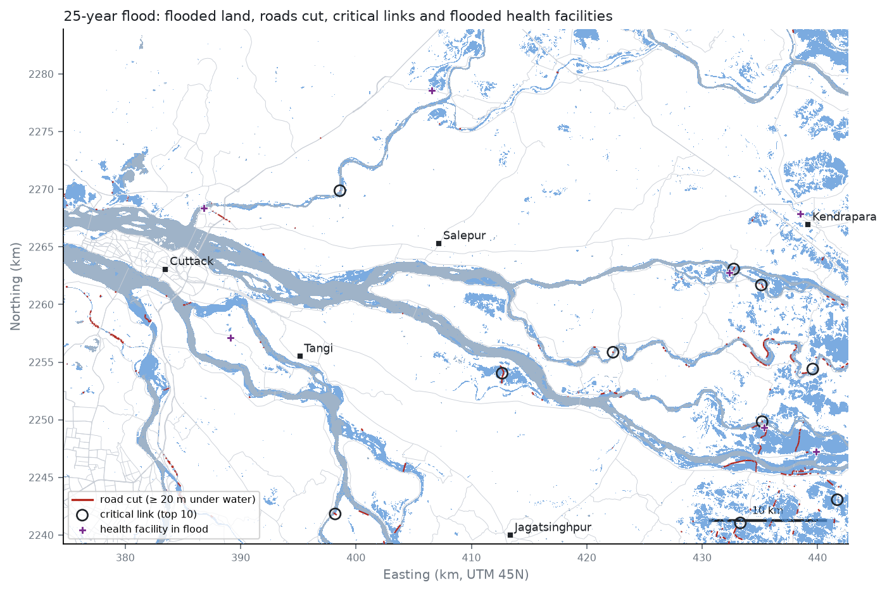</div><figcaption>25-year flood: roads cut, critical links (circles) and health facilities in the flood</figcaption></figure></div></article>

      <article class="detail" id="d-st"><span class="eyebrow">Structural</span><h3>Brick walls crack at about a metre of water; bridge piers must go deep.</h3>
        <div class="prose"><p>Flood depth comes from the ground elevation at the flood edge. A 230 mm brick wall cracks at about 0.8–1.0 m of water, and <b>4,080 people</b> live where the 25-year flood is a metre deep or more. At 11 major bridges, IRC:78 scour reaches 7–24 m below the high flood level if a branch carries a quarter of the 100-year flow; how the flow splits between branches is the missing input.</p></div>
        <div class="figs"><figure class="case wide"><div class="pic">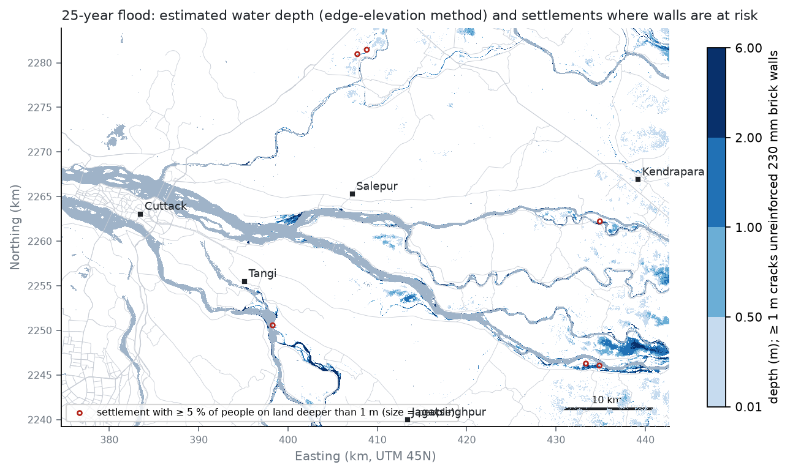</div><figcaption>Estimated depth in the 25-year flood; circles: settlements with people on land deeper than 1 m</figcaption></figure></div></article>

      <article class="detail" id="d-gt"><span class="eyebrow">Geotechnical</span><h3>River banks to inspect, and dry houses on soaked ground.</h3>
        <div class="prose"><p>Bank cells are ranked by how often water stands behind the bank, the soil and the people nearby, giving twenty candidate sites; the top twelve are on the field team's GPS file for inspection and soil samples. Houses that stay dry but stand within 200 m of flood water on silty clay sit on soaked ground: <b>441,605 people</b> in the 25-year flood. Soaking cuts a footing's bearing capacity by about 55 %, and the clay settles when the water table drops, the cracks that appear weeks after a flood.</p></div>
        <div class="figs"><figure class="case wide"><div class="pic">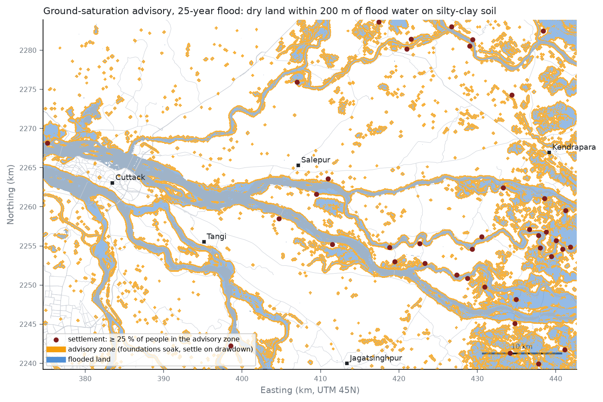</div><figcaption>Ground-saturation advisory zone around 25-year flood water</figcaption></figure></div></article>

      <article class="detail" id="d-oc"><span class="eyebrow">Ocean engineering</span><h3>The Bay of Bengal floods the delta from above.</h3>
        <div class="prose"><p>37 cyclones and depressions passed within 300 km of the delta since 2016, and 11 of the 20 largest floods seen by radar followed one; 13 came with heavy rain. Surge and high tide also hold back the drainage of the lower delta, so a tide record is the first ocean dataset to add.</p></div>
        <div class="figs"><figure class="case wide"><div class="pic">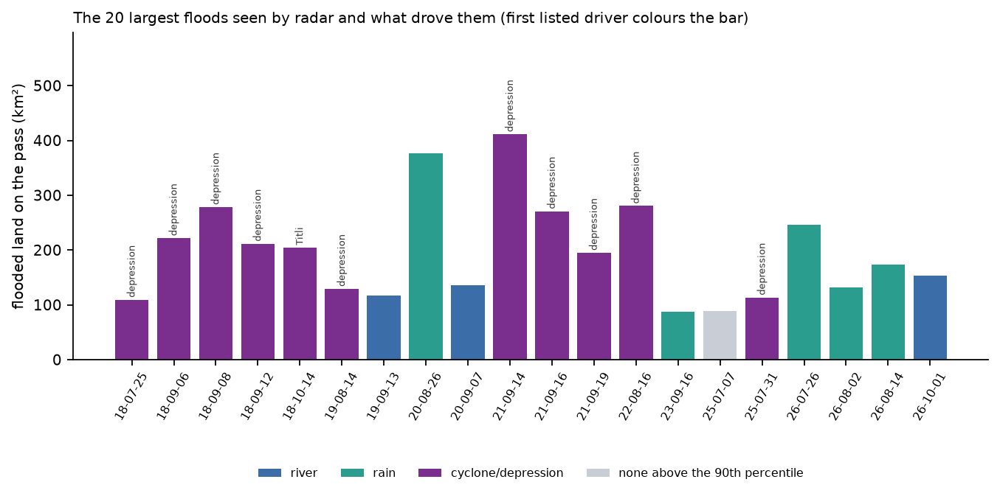</div><figcaption>The 20 largest floods on radar and their drivers</figcaption></figure></div></article>

      <article class="detail" id="d-cm"><span class="eyebrow">Construction technology and management</span><h3>Build in December–April; raise the links that matter.</h3>
        <div class="prose"><p>Twenty-nine years of river flow and 46 years of storm tracks leave <b>December–April</b> free of flood days and nearly free of storms, the window for road raising, embankment repair and installing sensors. Raising 10 critical links takes about <b>27,603 m³</b> of earthwork (about ₹0.97 crore at an assumed rate); none needs a raise above 2.1 m, so no bridge or vented causeway is needed.</p></div>
        <div class="figs"><figure class="case wide"><div class="pic">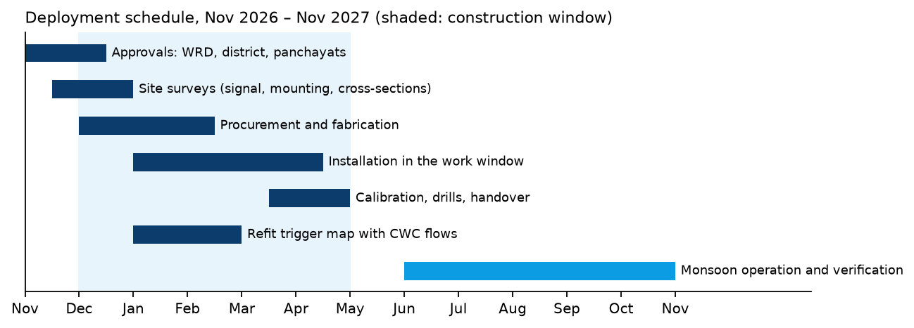</div><figcaption>Deployment schedule for the next monsoon, inside the construction window</figcaption></figure></div></article>

      <article class="detail" id="d-wr"><span class="eyebrow">Water resources and the watershed</span><h3>Half of a flood peak comes from below the dam.</h3>
        <div class="prose"><p>Hirakud dam controls about 59 % of the Mahanadi basin and passes 60% of the July–September flow at Naraj, but only about half of a yearly flood peak (median 48% over 29 years): the rest comes from the 58,000 km² of tributaries below the dam, within about a day. A delta warning needs the dam's release plan and gauges on those tributaries. A Gumbel fit to 29 years of annual maxima at Naraj gives 17,897 m³/s for the 2-year flood and 32,997 for the 25-year (11.7 lakh cusec).</p></div>
        <div class="figs"><figure class="case wide"><div class="pic">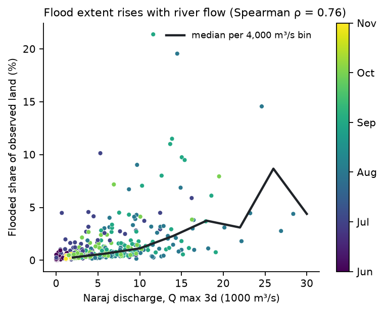</div><figcaption>Flooded share of each pass against the Naraj flow</figcaption></figure></div></article>
    </div>
  </div>
</div></section>

<section id="risk" class="band-surface" style="border-top:1px solid var(--line)"><div class="container">
  <div class="center-head">
    <span class="eyebrow blue">Risk and economics · structural, construction management, transportation</span>
    <h2>What the floods cost, and what protection is worth</h2>
    <p class="lede">Flood depth times a published depth–damage curve gives the houses damaged; flooded paddy at the support price gives the crop lost. Running every day of 1997-2025 (29 years) through the flow–impact table gives what a year costs on average.</p>
  </div>
  <div class="glance" style="margin-top:36px">
    <div><b>₹17 crore</b><span>expected flood damage a year: houses ₹4.2 crore, paddy ₹12.9 crore (a lower bound)</span></div>
    <div><b>1.3 lakh</b><span>person-days a year without road access to any hospital</span></div>
    <div><b>17 : 1</b><span>benefit to cost of raising the ten critical roads (₹0.97 crore)</span></div>
    <div><b>3.8 days</b><span>a year at "Be prepared" or above, so warnings stay rare and credible</span></div>
  </div>
  <div style="margin-top:32px"><div class="tablewrap"><table><thead><tr><th>Flood</th><th class=num>Naraj flow (m³/s)</th><th class=num>People on flooded land</th><th class=num>Houses (damage-equivalent)</th><th class=num>Houses, ₹ crore</th><th class=num>Paddy lost (ha)</th><th class=num>Paddy, ₹ crore</th><th class=num>Total, ₹ crore</th></tr></thead><tbody><tr><td>2-year</td><td class=num>17,897</td><td class=num>7,837</td><td class=num>245</td><td class=num>2.93</td><td class=num>985</td><td class=num>4.85</td><td class=num>7.78</td></tr><tr><td>5-year</td><td class=num>23,940</td><td class=num>25,384</td><td class=num>812</td><td class=num>9.74</td><td class=num>6,579</td><td class=num>32</td><td class=num>42</td></tr><tr><td>10-year and rarer (lower bound)</td><td class=num>27,941</td><td class=num>30,427</td><td class=num>999</td><td class=num>12</td><td class=num>7,746</td><td class=num>38</td><td class=num>50</td></tr></tbody></table></div></div>
  <div class="prose" style="margin-top:22px">
    <p><b>Road raising.</b> With the ten links raised, the person-days without hospital access drop from 131,511 to 54,811 a year. Valued only at the rural wage of ₹254 a day, the saving of ₹195 lakh a year pays the annualised earthwork (₹11 lakh over 20 years at 10%) 17 times over, before counting a single life saved.</p>
    <p><b>Hirakud.</b> Every 1,000 m³/s the dam keeps off a 5-year peak keeps about 1,535 people and 15 km² dry; off a 10-year peak, about 2,965 people. <b>Warnings.</b> Twenty-four hours of warning cuts flood damage by about 30 % (Global Commission on Adaptation), here about ₹5 crore a year.</p>
  </div>
  <p class="sim-note">Houses: JRC depth–damage curve for Asia (Huizinga et al. 2017) at the PMAY-G rate of ₹1.20 lakh a house, one house per 4.4 people (assumed). Paddy: 2,081 kg/ha (Odisha 2023-24) at the 2025-26 MSP of ₹2,369 a quintal, lost where water is 0.5 m deep or more and 30 % lost where shallower (to be checked in the farmers' interviews).</p>
</div></section>

<section id="partner" class="band-surface" style="border-top:1px solid var(--line)"><div class="container">
  <div class="center-head">
    <span class="eyebrow blue">For ClimMaTech</span>
    <h2>What the partner's system lacks, and what this project adds</h2>
    <p class="lede">We downloaded all 50 pages of climmatech.com, read the product, solution, platform, fact-sheet and case-study pages in full and searched the blog. Each card names one of their services, the gap we found and what this project adds, with the number behind it.</p>
  </div>
  <div class="gaps"><article class="gap"><span class="svc">River View · platform</span><h3>A flood-risk map layer with no flood extent behind it</h3><p>Their architecture lists a live map of river levels and flood risk. We add the layers it needs for the Mahanadi delta: where land floods, at which Naraj flow it starts, and who lives there.</p><span class="ev">590 radar passes · held-out IoU 0.20 vs 0.04 at high flows · past floods rank flood-prone land at AUC 0.90</span></article><article class="gap"><span class="svc">AI forecasting · 30 min to 48 h</span><h3>A forecast level is not a list of villages</h3><p>The forecast-to-bulletin tool turns a forecast Naraj flow, with or without rain, into a flood map, the settlements to warn and the roads under water, as GeoTIFF, GeoJSON and text for the control centre and the app.</p><span class="ev">25-year flow: 240 km², 30,427 people, 32 settlements to warn</span></article><article class="gap"><span class="svc">Research group · reconstructions</span><h3>Satellite evidence gathered by hand, and blocked by cloud</h3><p>Their Nepal reconstruction measured flood width by hand at 36 cross-sections; the optical pass was 75–79 % cloud and the only radar pass came two days early. Our radar model maps every Sentinel-1 pass automatically, through cloud.</p><span class="ev">Chosen by 92 audited training runs · about 5 s per pass · 0.56 IoU against Sentinel-2 water</span></article><article class="gap"><span class="svc">Solution pages · network design</span><h3>Site layouts drawn as illustrations</h3><p>Each solution page shows an illustrative layout. For the delta the network is placed with data: sirens where the most exposed people live, one radar gauge at the head of each distributary on a bridge that stays reachable.</p><span class="ev">40 sirens reach 48% of 32,388 exposed people at 1.5 km · 6 sensor bridges with coordinates</span></article><article class="gap"><span class="svc">Pravaah · discharge</span><h3>Discharge needs a surveyed section and a velocity factor</h3><p>Their FAQ says level and surface velocity become discharge only with a surveyed cross-section and a surface-to-mean velocity factor. Field protocols B and C measure both, with Manning&#x27;s n, at a road bridge near Naraj.</p><span class="ev">Velocity-area and Manning scripts ready · GloFAS flow at Naraj to compare</span></article><article class="gap"><span class="svc">Varshaq · rain gauge</span><h3>Rain that is not yet linked to flooded land</h3><p>The largest floods of the delta came with heavy rain, not with the highest river flows. Rain changes which land floods at the same flow. A learned flow + rain + history model, tested on years it never saw, maps heavy-rain passes better than the trigger map (IoU 0.22 against 0.15) and ranks flood-prone land best (AUC 0.95).</p><span class="ev">5-year flow: 27 km² in a dry week, 93 km² in a heavy-rain week · 13 of the 20 largest floods had heavy rain</span></article><article class="gap"><span class="svc">Flood warning · Aagah app</span><h3>Time to evacuate and reroute, but who and which roads?</h3><p>Their flood-warning page promises time to evacuate people, reroute traffic and secure infrastructure. Each bulletin names the settlements with people on flooded land, the roads that close and the villages that lose their hospital.</p><span class="ev">25-year flood: 41 settlements cut off from any hospital; 10,077 extra person-hours of travel a day</span></article><article class="gap"><span class="svc">Rakshak Control Centre</span><h3>Operators draw each alert area by hand</h3><p>The control centre asks operators to draw an area or upload boundaries, and accepts alerts from other systems in CAP. Every forecast now also writes a CAP 1.2 alert with one area per settlement to warn.</p><span class="ev">25-year flow: 32 alert areas; 5-year flow in a dry week: 1</span></article><article class="gap"><span class="svc">Dam and reservoir · solution</span><h3>Level at the dam, but not the water spread</h3><p>The same radar model maps reservoir water area on every pass, through cloud, which gives an area record for Hirakud to set beside the level gauge.</p><span class="ev">Next step: the atlas pipeline on the Hirakud reservoir</span></article></div>
</div></section>

<section id="field" class="band-stripes" style="border-top:1px solid var(--line)"><div class="container">
  <div class="center-head" style="text-align:left;justify-items:start;margin:0;max-width:780px">
    <span class="eyebrow">Field visit</span>
    <h2>Measure what the models cannot know.</h2>
    <p class="lede">Three days in the delta, built around the gaps: random points to test the map, a discharge and roughness measurement, bridge and bank inspections with soil samples for the IIT Bombay lab, village wells, sensor-site checks and interviews. Every sheet has a script, and every result can change a number.</p>
  </div>
  <div class="steps">
    <article class="step"><span class="day">Day 1 · Cuttack and Naraj</span><h3>Engineers and the river</h3><ul><li>Interviews with WRD and CWC engineers</li><li>The Naraj gauge and barrage</li><li>Cross-section, float timings and slope at a road bridge: discharge and Manning's n</li></ul></article>
    <article class="step"><span class="day">Day 2 · Cuttack–Salepur side</span><h3>Ground truth and banks</h3><ul><li>Ground-truth points GT01–GT20 with flood marks</li><li>Water levels in village wells at 0–500 m from the flood edge</li><li>Bank inspection and soil samples at the top-ranked sites</li></ul></article>
    <article class="step"><span class="day">Day 3 · Kendrapara side</span><h3>Links, facilities, sites</h3><ul><li>Ground-truth points GT21–GT40</li><li>Critical road links and flooded health facilities</li><li>Siren and sensor sites: signal, mounting, access in a flood</li></ul></article>
  </div>
  <div class="tablewrap"><table><thead><tr><th>At the site</th><th>Changes</th></tr></thead><tbody>
    <tr><td>40 random ground-truth points, flood marks, villagers' years</td><td>Atlas accuracy (POD / FAR / CSI); DEM depth check</td></tr>
    <tr><td>Cross-section and float timings at a bridge</td><td>Discharge against GloFAS; Manning's n for the Saint-Venant model</td></tr>
    <tr><td>Bridge deck, flood marks, scour, foundation levels</td><td>IRC:5 clearance, IRC:78 scour check, critical links</td></tr>
    <tr><td>Bank inspection and soil samples for the IIT Bombay lab</td><td>IS 1498 class, piping, rapid-drawdown stability, bank ranking</td></tr>
    <tr><td>Water levels in village wells at 0–500 m from the flood edge</td><td>Distance of the ground-saturation advisory</td></tr>
    <tr><td>Siren and sensor sites: signal, mounting, flood access</td><td>Final deployment list</td></tr>
    <tr><td>Interviews: WRD, CWC, ClimMaTech, villages</td><td>Problem statement; which flow floods which village</td></tr>
  </tbody></table></div>
</div></section>

<section id="training"><div class="container">
  <div class="center-head">
    <span class="eyebrow blue">More training</span>
    <h2>What we trained next, and what comes after</h2>
    <p class="lede">Each step targets a measured weakness of the current maps, uses data we already hold or can measure, and has a test that decides whether it helped.</p>
  </div>
  <div class="road"><article><span class="st done">Done</span><h3>Flow + rain + history model</h3><p>Gradient boosting per pixel and pass with the physical direction of each input imposed, fitted without the year it predicts. Pixel IoU 0.20 against 0.17 for the trigger map, 0.22 against 0.15 on heavy-rain passes; ranking AUC 0.95 against 0.91 for flood history alone. At high flows it catches 28% of flooded villages against 21%, with more false alarms (71% against 62%).</p><span class="gain">Uses the 457 monsoon passes already mapped</span></article><article><span class="st ">Next</span><h3>Teach the radar model the delta</h3><p>Sixty radar passes have a Sentinel-2 image within a day. Their water masks become weak labels to fine-tune the U-Net on the delta, tested on dates left out.</p><span class="gain">Baseline to beat: flood-water recall 0.22 against Sentinel-2</span></article><article><span class="st done">Done</span><h3>Retrained the radar models at 20 m</h3><p>TerraMind-B and U-Net trained on radar degraded to the 20 m overview the atlas reads. On 20 m input the fusion scores 0.695 against 0.640 for the 10 m-trained pair (threshold from validation: 0.681 against 0.646).</p><span class="gain">Now maps the atlas</span></article><article><span class="st ">Planned</span><h3>Hirakud reservoir water area</h3><p>The same pipeline on the Hirakud reservoir gives a water-area record on every pass, for the dam and reservoir solution.</p><span class="gain">Same model, a new area of interest</span></article><article><span class="st done">Done</span><h3>Forecast the Naraj flow 1-3 days ahead</h3><p>Gradient boosting on the flows at Naraj, Tikarpara and below Hirakud and the catchment rain, tested on the monsoons of 2016-2026: Nash-Sutcliffe efficiency 0.99 / 0.94 / 0.89 at 1 / 2 / 3 days against 0.96 / 0.88 / 0.79 for persistence.</p><span class="gain">Runs in the live feed</span></article><article><span class="st ">After the visit</span><h3>Calibrate on field truth</h3><p>Forty random ground-truth points give the atlas its accuracy on the ground and per-land-cover thresholds.</p><span class="gain">POD and FAR at 40 points</span></article></div>
</div></section>

<section id="forecast" style="border-top:1px solid var(--line)"><div class="container">
  <div class="split">
    <div>
      <span class="eyebrow">Prediction model · water resources</span>
      <h2 style="margin-top:16px">How far ahead the warning sees.</h2>
      <div class="prose" style="margin-top:20px">
        <p>Water reaches Naraj from the Hirakud reach and the Tel and Ong tributaries in about a day. A gradient-boosted model per lead time reads today's flows at Naraj, Tikarpara and below Hirakud and the rain over the catchment between them, and forecasts the Naraj flow one to three days ahead.</p>
        <p>Trained on 1997–2015 and tested on the monsoons of 2016–2026 it never saw, it keeps its skill where persistence fades: Nash–Sutcliffe efficiency 0.89 three days ahead against 0.79. A rain forecast adds most where it matters, in catching floods above the 2-year flow. With Pravaah-type gauges upstream, the same code trains on measured flows.</p>
      </div>
    </div>
    <div class="figs" style="grid-template-columns:minmax(0, 1fr)"><figure class="case wide"><div class="pic">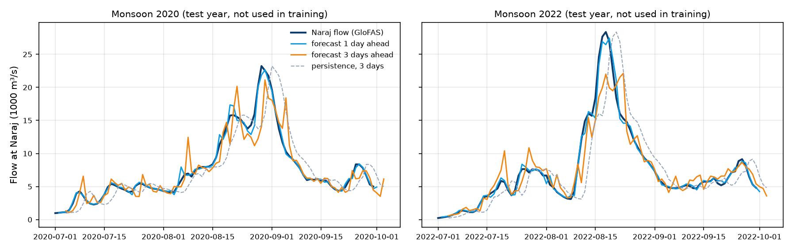</div><figcaption>Two test monsoons: the flow at Naraj and the forecasts made one and three days earlier</figcaption></figure></div>
  </div>
  <div style="margin-top:28px"><div class="tablewrap"><table><thead><tr><th>Lead</th><th class=num>Persistence</th><th class=num>Linear routing</th><th class=num>Model</th><th class=num>Model + rain forecast</th><th>2-year flood caught / false alarms (model + rain)</th><th>Same, persistence</th></tr></thead><tbody><tr><td>1 day</td><td class=num>0.96</td><td class=num>0.98</td><td class=num>0.99</td><td class=num>0.99</td><td>77% / 5%</td><td>77% / 23%</td></tr><tr><td>2 days</td><td class=num>0.88</td><td class=num>0.88</td><td class=num>0.94</td><td class=num>0.95</td><td>73% / 32%</td><td>58% / 42%</td></tr><tr><td>3 days</td><td class=num>0.79</td><td class=num>0.75</td><td class=num>0.89</td><td class=num>0.89</td><td>58% / 38%</td><td>42% / 58%</td></tr></tbody></table></div><p class="sim-note">Nash–Sutcliffe efficiency of the daily Naraj flow, June–November of the test years; 1 = perfect. "Model + rain forecast" uses the rain of the coming days as if forecast perfectly: an upper bound.</p></div>
</div></section>

<section id="deploy" class="band-surface" style="border-top:1px solid var(--line)"><div class="container">
  <div class="split">
    <div>
      <span class="eyebrow">Deployment</span>
      <h2 style="margin-top:16px">From a forecast to a bulletin in seconds.</h2>
      <div class="prose" style="margin-top:20px">
        <p>A forecast flow at Naraj (m³/s or lakh cusec, and optionally the forecast rain) goes in; a flood map, the settlements to warn and the roads under water come out, ready for a control room or a phone alert.</p>
        <p>Sirens go where exposed people live: 40 sirens reach 48% of the 32,388 exposed people at a 1.5 km audible range, and phone alerts reach the rest. One radar gauge on each main distributary measures how the flood splits between the branches.</p>
      </div>
    </div>
    <div class="terminal"><div class="bar"><i></i><i></i><i></i><span>forecast_to_impact.py --q 32997</span></div><pre>MAHANADI DELTA - EXPECTED FLOODING FOR A NARAJ FLOW OF 32,997 m3/s (11.7 lakh cusec), lead time 24 h
(flow = highest daily flow over 3 days at Naraj, the measure the atlas is fitted on; method: trigger-discharge map, river flow only)
Expected flooded land: 240 km2 (lower bound: flow above the largest in the 2017-2026 radar record)
People living on that land: 30,427
Settlements with at least 10 % of people on flooded land: 32
  - near Biridi (1.4 km): about 406 people (71% of 574) at 20.3319 N, 86.0429 E
  - near Patkura (9.7 km): about 387 people (55% of 704) at 20.3133 N, 86.3615 E
  - near Bhattasagar Square (7.0 km): about 301 people (19% of 1,613) at 20.6301 N, 86.1248 E
  - near Patkura (7.3 km): about 275 people (16% of 1,763) at 20.3304 N, 86.3768 E
  - near Patkura (8.5 km): about 176 people (15% of 1,205) at 20.3190 N, 86.3756 E
  - near Patkura (5.9 km): about 153 people (11% of 1,349) at 20.3416 N, 86.3819 E
  - near Choudwar (4.0 km): about 143 people (21% of 694) at 20.5588 N, 85.8918 E
  - near Patkura (2.7 km): about 131 people (20% of 647) at 20.4002 N, 86.3823 E
  - near Patkura (9.3 km): about 112 people (42% of 269) at 20.3113 N, 86.3760 E
  - near Patkura (1.5 km): about 90 people (32% of 281) at 20.3855 N, 86.3917 E
  - near Fakirabad (7.2 km): about 89 people (13% of 706) at 20.4445 N, 86.4497 E
  - near Patkura (9.1 km): about 83 people (33% of 253) at 20.3116 N, 86.4309 E
  - near Patkura (10.8 km): about 82 people (33% of 247) at 20.3116 N, 86.3447 E
  - near Nemalo (5.3 km): about 78 people (12% of 663) at 20.3844 N, 86.1789 E
  - near Biridi (7.9 km): about 76 people (16% of 481) at 20.2658 N, 86.0652 E
Main roads under water: 14.5 km; named sections: Right Puri Main Canal Road 0.8 km
Source: Sentinel-1 flood atlas 2017-2026 + GloFAS discharge (IIT Bombay IDP prototype). Not an official warning.</pre></div>
  </div>
  <div class="center-head" style="margin-top:clamp(56px, 7vw, 88px)">
    <span class="eyebrow blue">Where it observes</span>
    <h2>A network of sites, chosen from the data</h2>
    <p class="lede">The partner's solution pages draw illustrative layouts. This one is the Mahanadi delta, with every site placed by the analysis and a reason you can check.</p>
  </div>
  <div class="net">
    <div class="net-map"><figure class="case"><div class="pic">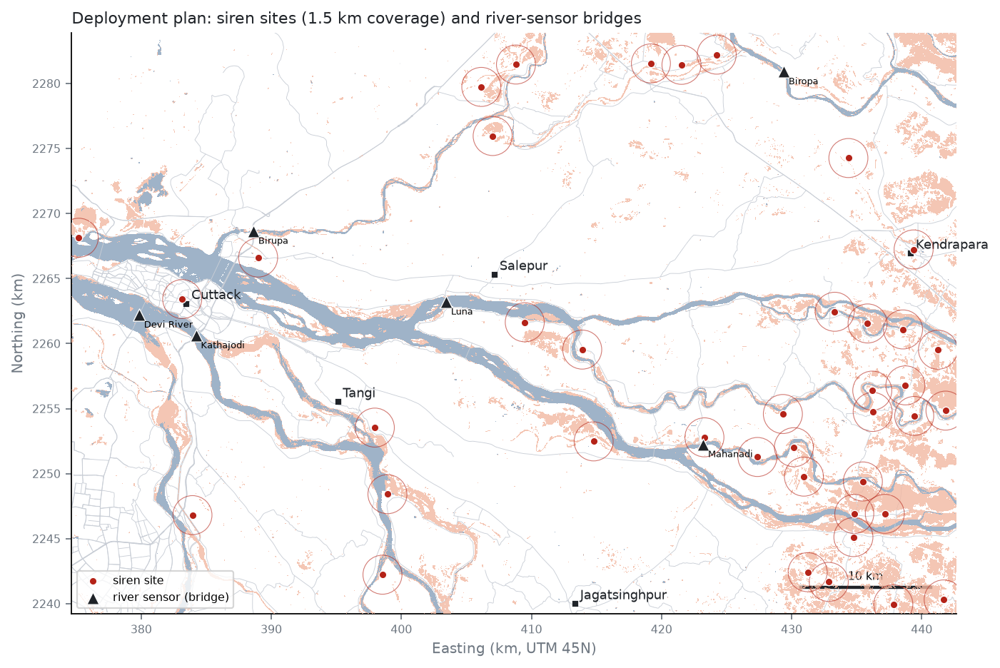</div><figcaption>Siren sites with 1.5 km coverage and the river-sensor bridges</figcaption></figure><p class="net-note">The Mahanadi delta. Real sites, from impact_siting.py.</p></div>
    <ol class="sites"><li><span class="n">1</span><div><h3>Devi River <span class="pill">Pravaah-type gauge</span></h3><p>Netaji Subhash Chandra Bose Setu, 2,823 m long, 8 km from Naraj · 20.4546 N, 85.8481 E</p><p class="why"><b>Why here:</b> the bridge nearest Naraj on the Devi River whose approaches stay dry in the 25-year flood, so it can be reached during the flood. A gauge here measures how much of the flood this branch takes; 2,526 people live in the flood hazard within 10 km.</p></div></li><li><span class="n">2</span><div><h3>Kathajodi <span class="pill">Pravaah-type gauge</span></h3><p>NH16, 869 m long, 13 km from Naraj · 20.4405 N, 85.8901 E</p><p class="why"><b>Why here:</b> the bridge nearest Naraj on the Kathajodi whose approaches stay dry in the 25-year flood, so it can be reached during the flood. A gauge here measures how much of the flood this branch takes; 3,425 people live in the flood hazard within 10 km.</p></div></li><li><span class="n">3</span><div><h3>Birupa <span class="pill">Pravaah-type gauge</span></h3><p>NH16;NH55, 543 m long, 17 km from Naraj · 20.5133 N, 85.9320 E</p><p class="why"><b>Why here:</b> the bridge nearest Naraj on the Birupa whose approaches stay dry in the 25-year flood, so it can be reached during the flood. A gauge here measures how much of the flood this branch takes; 3,011 people live in the flood hazard within 10 km.</p></div></li><li><span class="n">4</span><div><h3>Luna <span class="pill">Pravaah-type gauge</span></h3><p>unnamed bridge, 776 m long, 31 km from Naraj · 20.4650 N, 86.0743 E</p><p class="why"><b>Why here:</b> the bridge nearest Naraj on the Luna; no bridge on it keeps dry approaches in the 25-year flood, so it is read remotely and serviced before the monsoon. A gauge here measures how much of the flood this branch takes; 1,169 people live in the flood hazard within 10 km.</p></div></li><li><span class="n">5</span><div><h3>Mahanadi <span class="pill">Pravaah-type gauge</span></h3><p>unnamed bridge, 458 m long, 52 km from Naraj · 20.3668 N, 86.2642 E</p><p class="why"><b>Why here:</b> the bridge nearest Naraj on the Mahanadi whose approaches stay dry in the 25-year flood, so it can be reached during the flood. A gauge here measures how much of the flood this branch takes; 3,130 people live in the flood hazard within 10 km.</p></div></li><li><span class="n">6</span><div><h3>Biropa <span class="pill">Pravaah-type gauge</span></h3><p>unnamed bridge, 424 m long, 60 km from Naraj · 20.6261 N, 86.3224 E</p><p class="why"><b>Why here:</b> the bridge nearest Naraj on the Biropa; no bridge on it keeps dry approaches in the 25-year flood, so it is read remotely and serviced before the monsoon. A gauge here measures how much of the flood this branch takes; 2,168 people live in the flood hazard within 10 km.</p></div></li><li><span class="n">7</span><div><h3>Sirens <span class="pill">Rakshak-type siren</span></h3><p>40 sites; the first three: Fakirabad, near Patkura (8.5 km), near Gobindpur (1.1 km).</p><p class="why"><b>Why here:</b> each site is picked to cover the most people still uncovered who live on land flooded in the 25-year flood or in at least 10 % of passes; 40 sirens reach 48% of them at a 1.5 km audible range.</p></div></li></ol>
  </div>
</div></section>

<section id="next" class="band-surface" style="border-top:1px solid var(--line)"><div class="container">
  <div class="center-head" style="text-align:left;justify-items:start;margin:0">
    <span class="eyebrow">What comes next</span>
    <h2>One next step per specialization</h2>
  </div>
  <div class="tablewrap"><table><thead><tr><th>Specialization</th><th>Next step</th><th>Why</th></tr></thead><tbody>
    <tr><td>Remote sensing</td><td>SWOT water-surface elevations and NISAR L-band radar</td><td>Measured water levels for depth; flooding under crops and trees</td></tr>
    <tr><td>Water resources</td><td>Refit with observed CWC flows; a 2-D HEC-RAS model calibrated on the atlas</td><td>Floods larger than any seen since 2017</td></tr>
    <tr><td>Transportation systems</td><td>Evacuation routing and shelter capacity from the live cut-off dates; school and market access</td><td>Who to move first, and where to</td></tr>
    <tr><td>Structural</td><td>Local depth–damage curves for kutcha and pucca houses from the field survey</td><td>Replace the continental JRC curve in the damage estimate</td></tr>
    <tr><td>Geotechnical</td><td>2-D seepage of the top embankments; bank-line migration from Landsat since 1990</td><td>Piping and erosion risk in numbers</td></tr>
    <tr><td>Ocean</td><td>Paradip tide record, surge hindcasts, sea-level rise</td><td>Compound river, rain and surge flooding</td></tr>
    <tr><td>Construction technology and management</td><td>Life-cycle cost, O&amp;M plan, procurement through GeM</td><td>From a plan to an executable project</td></tr>
  </tbody></table></div>
</div></section>

<section id="team"><div class="container">
  <div class="center-head" style="text-align:left;justify-items:start;margin:0">
    <span class="eyebrow">Team</span>
    <h2>Five students, seven specializations</h2>
  </div>
  <div class="team">
    <div class="person"><b>Nikhil Upadhyay</b><span>Team lead · water resources and ocean: flow-to-flood model, learned flow + rain model, Naraj flow forecast, watershed, design floods, storm drivers; organises the visit</span></div>
    <div class="person"><b>Vineet Jangir</b><span>Remote sensing: benchmark of six foundation models, fusion, radar models retrained at 20 m</span></div>
    <div class="person"><b>Prakhar Gupta</b><span>Remote sensing: flood atlas from every Sentinel-1 pass, Sentinel-2 check, atlases of two more basins, map viewer</span></div>
    <div class="person"><b>Himanshu Shete</b><span>Transportation and structural: hospital access, critical links, walls, bridge scour; integration: impact chain, live warning feed and data plugins, flood-risk economics, bulletins with CAP alerts, training audit, partner gap analysis, website and report</span></div>
    <div class="person"><b>Prabhat Kumar</b><span>Geotechnical and construction management: banks, ground saturation, foundations, work windows, deployment plan</span></div>
  </div>
  <p class="note">Faculty guide: Prof. Basudev Biswal, Department of Civil Engineering, IIT Bombay. Industry partner: ClimMaTech Pvt. Ltd. (IIT Mandi), Dr. Vivek Gupta and Siddik Barbhuiya.</p>
</div></section>

<section class="cta-band"><div class="container">
  <div class="center-head">
    <span class="eyebrow">Explore the data</span>
    <h2>See what a forecast floods.</h2>
    <p class="lede">Pick a flood and see the land, villages and roads that go under, with the sirens and sensors that would warn them.</p>
    <a class="btn btn-primary" href="viewer.html">Open the flood map <span class="arrow" aria-hidden="true">→</span></a>
  </div>
</div></section>
</main>

<footer><div class="container">
  <div class="foot-grid">
    <div class="foot-brand">
      <a class="brand" href="#top"><span class="mark" aria-hidden="true"></span>Prithvi Flood-IN</a>
      <p>A flood atlas, flow-to-flood maps and engineering impacts for the Mahanadi delta. Integrated Design Project, Department of Civil Engineering, IIT Bombay, 2026.</p>
      <span class="badge" style="justify-self:start"><span class="mark" aria-hidden="true"></span>IIT Bombay · CE IDP 2026</span>
    </div>
    <div class="foot-col"><h4>Project</h4><a href="#problem">Problem</a><a href="#atlas">Atlas</a><a href="#how">How it works</a><a href="#model">Model</a><a href="#team">Team</a></div>
    <div class="foot-col"><h4>Specializations</h4><a href="#d-tr">Transportation</a><a href="#d-gt">Geotechnical</a><a href="#d-st">Structural</a><a href="#d-oc">Ocean</a><a href="#d-cm">Construction</a><a href="#d-wr">Water resources</a></div>
    <div class="foot-col"><h4>Use it</h4><a href="viewer.html">Flood map</a><a href="#deploy">Bulletin tool</a><a href="#partner">For ClimMaTech</a><a href="#field">Field visit</a><a href="#training">More training</a></div>
    <div class="foot-col"><h4>Data</h4><span>Sentinel-1 and -2 (Planetary Computer)</span><span>GloFAS v4 and ERA5 (Open-Meteo)</span><span>GHSL, WorldCover, Copernicus DEM</span><span>SoilGrids, IBTrACS</span><span>© OpenStreetMap contributors</span></div>
  </div>
  <div class="foot-bottom"><p>© 2026 Prithvi Flood-IN team, IIT Bombay. Not an official ClimMaTech product or flood warning.</p><p>Faculty guide: Prof. Basudev Biswal</p></div>
</div></footer>

<script type="application/json" id="sim-data">{"T2": {"key": "T2", "label": "2-year", "q": 17897, "lakh": 6.3, "km2": 49.5, "people": 7837, "sett": 4, "road": 6.4, "cut": 0, "img": "img/scen_T2.webp", "note": "A flood of this size or larger comes on average once in 2 years."}, "T5": {"key": "T5", "label": "5-year", "q": 23940, "lakh": 8.5, "km2": 217.9, "people": 25384, "sett": 24, "road": 33.9, "cut": 51155, "img": "img/scen_T5.webp", "note": "A flood of this size or larger comes on average once in 5 years."}, "T10": {"key": "T10", "label": "10-year", "q": 27941, "lakh": 9.9, "km2": 239.7, "people": 30427, "sett": 32, "road": 39.3, "cut": 52423, "img": "img/scen_T10.webp", "note": "A flood of this size or larger comes on average once in 10 years."}, "T25": {"key": "T25", "label": "25-year", "q": 32997, "lakh": 11.7, "km2": 239.7, "people": 30427, "sett": 32, "road": 39.3, "cut": 52423, "img": "img/scen_T25.webp", "note": "Flow above the largest in the radar record (28,378 m\u00b3/s): the map cannot grow further, so this is a lower bound."}, "T100": {"key": "T100", "label": "100-year", "q": 40470, "lakh": 14.3, "km2": 239.7, "people": 30427, "sett": 32, "road": 39.3, "cut": 52423, "img": "img/scen_T100.webp", "note": "Flow above the largest in the radar record (28,378 m\u00b3/s): the map cannot grow further, so this is a lower bound."}, "observed_20180908": {"key": "observed_20180908", "label": "Largest seen", "q": 15030, "lakh": 5.3, "km2": 277.8, "people": 39367, "sett": 38, "road": 34.6, "cut": 49742, "img": "img/scen_obs.webp", "note": "8 September 2018: the largest flood on a near-complete pass, with 159 mm of rain in 7 days from a Bay of Bengal depression and only a moderate river."}}</script>
<script>
(function () {
  var data = JSON.parse(document.getElementById("sim-data").textContent);
  var btns = document.querySelectorAll("[data-scen]");
  var img = document.getElementById("sim-img");
  function fmt(x) { return Number(x).toLocaleString("en-US"); }
  function set(id, v) { var el = document.getElementById(id); if (el) el.textContent = v; }
  function show(key) {
    var s = data[key];
    if (!s) return;
    btns.forEach(function (b) { b.setAttribute("aria-pressed", b.getAttribute("data-scen") === key ? "true" : "false"); });
    if (s.img) { img.src = s.img; img.alt = "Flooded land in the " + s.label + " scenario"; }
    set("sim-q", fmt(s.q) + " m³/s");
    set("sim-lakh", s.lakh.toFixed(1) + " lakh cusec");
    set("sim-km2", fmt(Math.round(s.km2)) + " km²");
    set("sim-people", fmt(s.people));
    set("sim-sett", fmt(s.sett));
    set("sim-road", s.road.toFixed(1) + " km");
    set("sim-cut", fmt(s.cut));
    set("sim-note", s.note);
  }
  btns.forEach(function (b) { b.addEventListener("click", function () { show(b.getAttribute("data-scen")); }); });

  var items = document.querySelectorAll(".acc-item");
  var vImg = document.getElementById("acc-img"), vLab = document.getElementById("acc-label");
  function open(it) {
    items.forEach(function (x) {
      var on = x === it;
      x.classList.toggle("open", on);
      x.querySelector(".acc-head").setAttribute("aria-expanded", on ? "true" : "false");
      x.querySelector(".acc-body").hidden = !on;
    });
    if (it.getAttribute("data-img")) { vImg.src = it.getAttribute("data-img"); vImg.alt = it.getAttribute("data-alt"); }
    vLab.textContent = it.getAttribute("data-label");
  }
  items.forEach(function (it) { it.querySelector(".acc-head").addEventListener("click", function () { open(it); }); });

  var mb = document.getElementById("menu-btn"), mn = document.getElementById("mnav");
  function closeMenu() { mn.hidden = true; mb.setAttribute("aria-expanded", "false"); }
  mb.addEventListener("click", function () {
    var willOpen = mn.hidden;
    mn.hidden = !willOpen;
    mb.setAttribute("aria-expanded", willOpen ? "true" : "false");
  });
  mn.querySelectorAll("a").forEach(function (a) { a.addEventListener("click", closeMenu); });
  document.addEventListener("keydown", function (ev) { if (ev.key === "Escape" && !mn.hidden) { closeMenu(); mb.focus(); } });
})();
</script>
